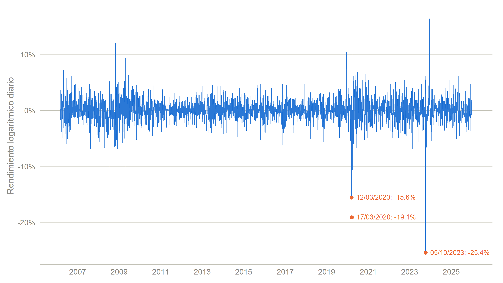
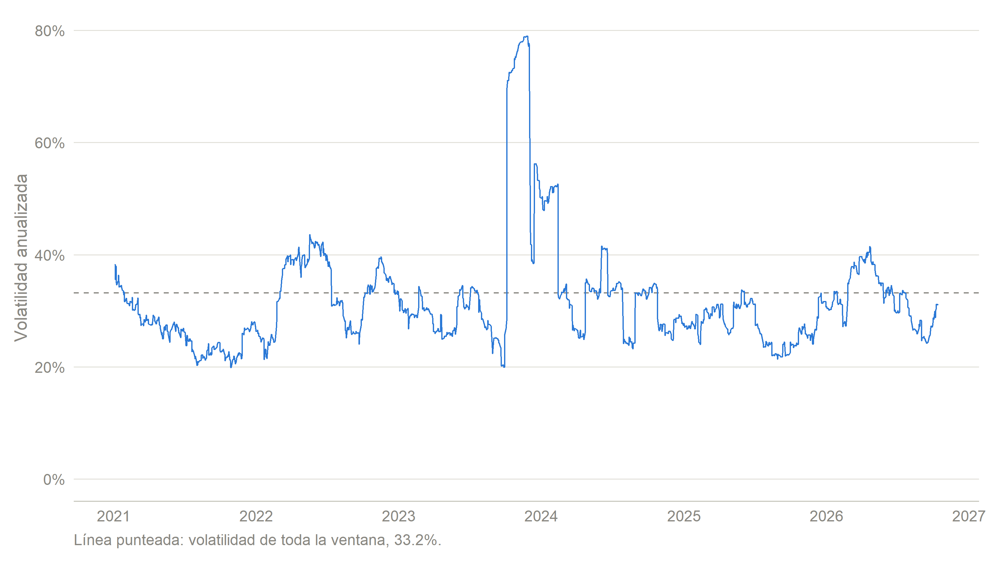
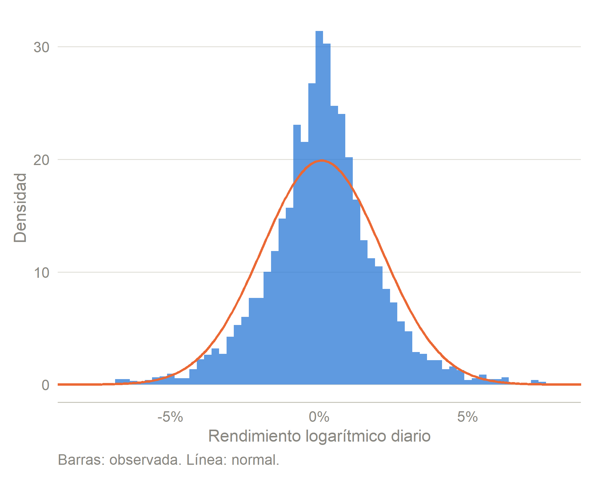
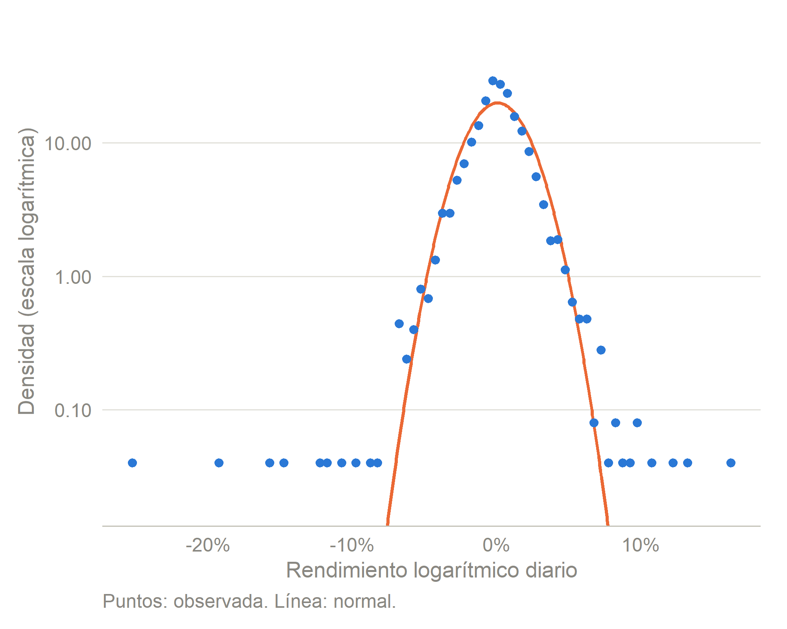
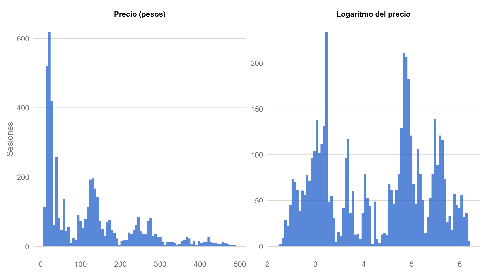
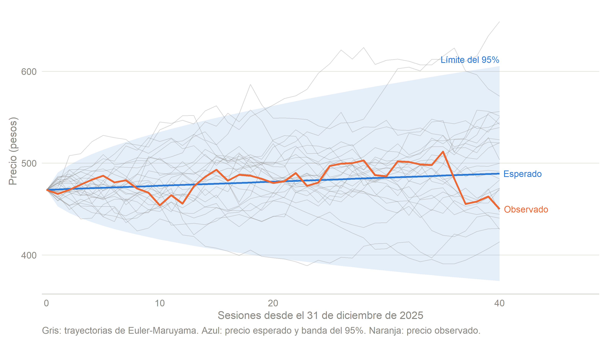
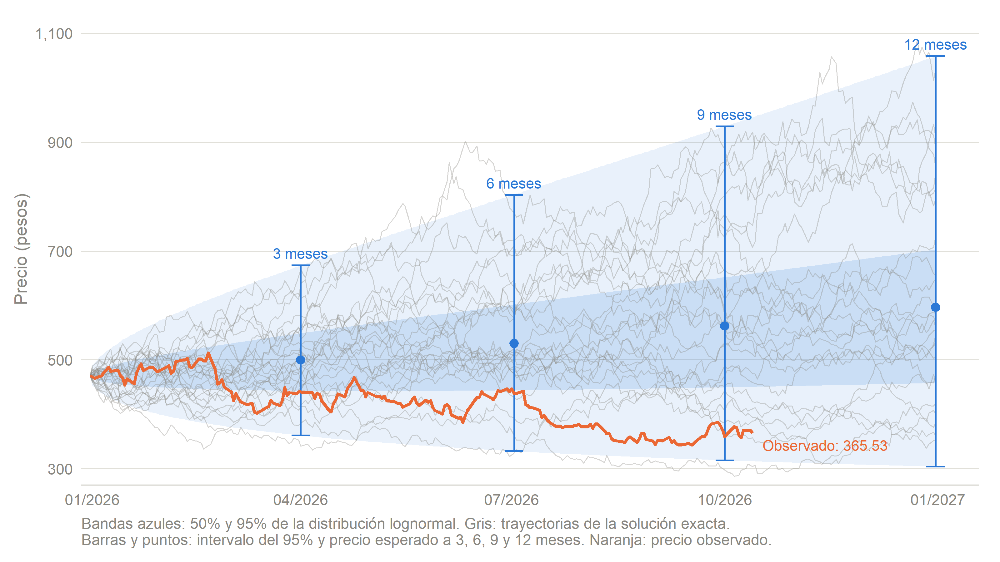
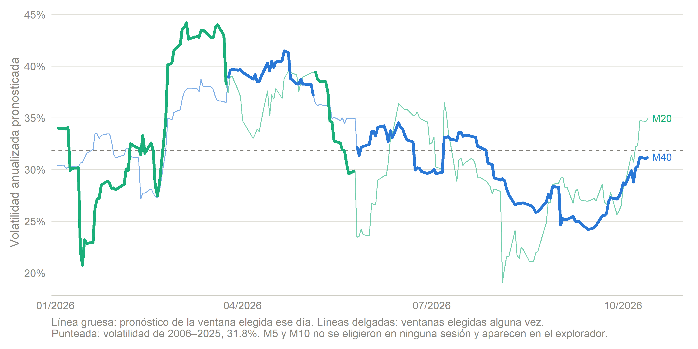
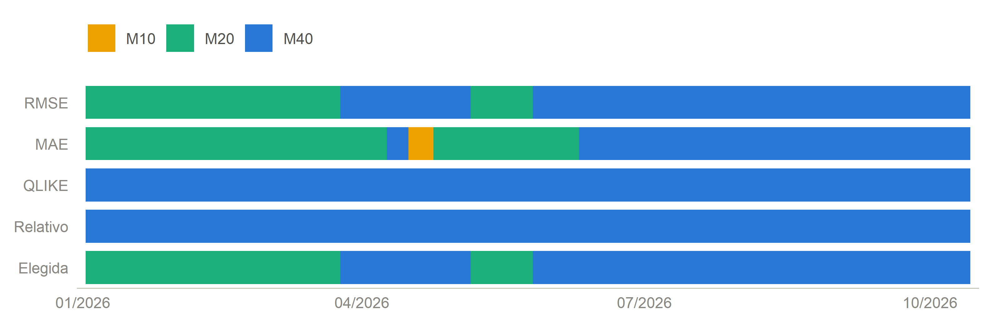

Ver código
est_moments <- return_moments(r_est)
worst <- est_returns[order(est_returns$log_return), ][1:3, ]
best <- est_returns[order(-est_returns$log_return), ][1:3, ]Proyecto Final · Parte 3 | GAPB, febrero de 2006–diciembre de 2025
Santiago Álvarez Tostado Estrada
Francisco Uriel Ledezma Chávez
Jorge Isaac López Ávila
Juan Pablo Morán Errejón
15 de octubre de 2026
El movimiento browniano geométrico (GBM) es el modelo con el que la teoría financiera describe el precio de una acción como un proceso que crece a una tasa promedio y recibe, cada instante, un choque aleatorio proporcional a su nivel. Su atractivo es que convierte dos números, una deriva y una volatilidad, en una distribución completa del precio futuro, aunque esa conveniencia descansa en supuestos concretos: rendimientos logarítmicos independientes, normales y con parámetros constantes. En esta tercera entrega contrastamos esos supuestos con la historia de GAPB y después utilizamos los parámetros estimados para proyectar su precio, de modo que el modelo se evalúa antes de emplearse y no solo se aplica.
El documento sigue el orden del análisis. La sección 2 calcula los rendimientos logarítmicos, su media y su volatilidad para el periodo reciente y año por año, con el fin de identificar cambios de comportamiento y episodios de mayor riesgo. La sección 3 aplica la prueba de Jarque-Bera a los rendimientos, al precio y a su logaritmo, y una prueba t sobre la media diaria. Las secciones 4 y 5 construyen la proyección del precio con parámetros diarios, mediante la ecuación \(dS\), y con parámetros anuales, mediante la ecuación de \(\ln S_t\), cada una con su intervalo del 95% y su verificación por simulación. La sección 6 discute qué tan lejos están los datos del modelo y qué riesgos introduce suponer normalidad, y la sección 7 reúne las conclusiones. Un anexo final aplica cada día el procedimiento de promedio móvil visto en clase y muestra cómo se mueven, sesión por sesión, la ventana elegida y el pronóstico de volatilidad.
Trabajamos con dos ventanas que responden a preguntas distintas. Las pruebas y los parámetros del modelo usan toda la historia de cotización disponible hasta el 31 de diciembre de 2025, es decir, 4,992 rendimientos diarios calculados a partir del primer cierre disponible, del 27 de febrero de 2006, mientras que la descripción reciente abarca de enero de 2021 al 13 de octubre de 2026, último cierre de la copia de datos. Ninguna observación posterior a 2025 interviene en los parámetros de las pruebas ni de las proyecciones, por lo que los precios de 2026 sirven después como evidencia fuera de muestra para evaluar las proyecciones, que parten del cierre ajustado del 31 de diciembre de 2025, de 471.02 pesos.
Los precios provienen de la copia pública de Yahoo Finance guardada en el repositorio, con cierres hasta el 13 de octubre de 2026 (Yahoo Finance, 2026). Utilizamos el cierre ajustado, que incorpora dividendos y ajustes de capital, porque un rendimiento debe medir el cambio en el valor de la inversión y no solo en la cotización. Para cada sesión calculamos el rendimiento simple y el logarítmico,
\[ R_t=\frac{S_t-S_{t-1}}{S_{t-1}}, \qquad r_t=\ln\!\left(\frac{S_t}{S_{t-1}}\right)=\ln S_t-\ln S_{t-1}=\ln(1+R_t), \]
y trabajamos con \(r_t\) porque es aditivo en el tiempo: el rendimiento entre dos fechas es la suma de los rendimientos diarios intermedios, \(r_{0,T}=\sum_{t=1}^{T}r_t=\ln(S_T/S_0)\), propiedad que vuelve exacto el escalamiento de la media por horizonte y, bajo independencia, también el de la varianza (Ruiz Hernández, 2026). La media y la volatilidad diarias se estiman con
\[ \bar r=\frac{1}{n}\sum_{t=1}^{n}r_t, \qquad s=\sqrt{\frac{1}{n-1}\sum_{t=1}^{n}\left(r_t-\bar r\right)^2}. \]
ggplot(est_returns, aes(date, log_return)) +
geom_hline(yintercept = 0, colour = RISK_INK$baseline, linewidth = 0.3) +
geom_line(colour = RISK_PALETTE[1], linewidth = 0.25) +
geom_point(data = worst, aes(date, log_return), colour = RISK_PALETTE[2], size = 1.6) +
geom_text(data = worst, aes(date, log_return, label = paste0(format(date, "%d/%m/%Y"), ": ", pct(log_return, 1))),
hjust = -0.08, vjust = 0.4, size = 2.8, colour = RISK_PALETTE[2]) +
scale_x_date(date_breaks = "2 years", date_labels = "%Y") +
scale_y_continuous(labels = label_percent(accuracy = 1)) +
labs(x = NULL, y = "Rendimiento logarítmico diario")
Entre el 28 de febrero de 2006 y el 31 de diciembre de 2025 la muestra contiene 4,992 rendimientos, con una media diaria de 0.0737% y una volatilidad diaria de 2.00%, de modo que la dispersión de un día cualquiera es unas 27 veces la tendencia que se acumula en ese mismo día. La Figura 1 muestra que esa dispersión no se reparte de manera uniforme: los movimientos grandes aparecen agrupados en la crisis de 2008–2009, en marzo de 2020 y en el último trimestre de 2023, mientras que entre esos episodios la serie permanece en una banda estrecha.
Las tres caídas más profundas ocurrieron el 5 de octubre de 2023, el 17 de marzo de 2020 y el 12 de marzo de 2020, de -25.43%, -19.09% y -15.56%, y las tres alzas más intensas el 14 de diciembre de 2023, el 24 de marzo de 2020 y el 29 de octubre de 2008. La primera siguió al aviso de GAP de que la AFAC le había notificado una modificación unilateral de las bases de regulación tarifaria (Grupo Aeroportuario del Pacífico, 2023), y la mayor alza llegó dos meses después, en la jornada en que las tres aeroportuarias subieron tras la autorización de las tarifas de ASUR por parte de la SICT (El CEO, 2023). Los dos extremos de la muestra completa coinciden así con el mismo frente regulatorio, una asociación temporal que no aísla por sí sola un efecto causal. Como son rendimientos logarítmicos, equivalen a variaciones del precio de -22.5% y 17.8%, respectivamente.
Bajo el supuesto de rendimientos independientes e idénticamente distribuidos, el rendimiento de un año, que es la suma de 252 rendimientos diarios, tiene una media 252 veces la media diaria y una varianza 252 veces la varianza diaria, por lo que
\[ \bar r_{\text{anual}}=252\,\bar r, \qquad \sigma_{\text{anual}}=\sqrt{252}\;s. \]
La deriva del precio en el GBM no es \(252\,\bar r\), porque la media del logaritmo crece más despacio que la media del precio. Como \(E[r_{\Delta t}]=\left(\mu-\tfrac12\sigma^2\right)\Delta t\), con \(\Delta t=1/252\) para un rendimiento diario, despejar la deriva da \(\widehat\mu=252\,\bar r+\tfrac12\sigma_{\text{anual}}^2\), y por ello reportamos ambas cifras por separado (Ruiz Hernández, 2026).
desc_moments <- return_moments(desc_returns$log_return)
desc_gbm <- gbm_params(desc_returns$log_return)
recent_table <- data.frame(
Ventana = paste0(fecha(min(desc_returns$date)), "–", fecha(max(desc_returns$date))),
Observaciones = num(desc_moments$n, 0),
"Media diaria" = pct(desc_moments$mean_daily, 4),
"Volatilidad diaria" = pct(desc_moments$vol_daily, 3),
"Media anualizada" = pct(desc_moments$mean_annual),
"Volatilidad anualizada" = pct(desc_moments$vol_annual),
"Deriva del precio (μ)" = pct(desc_gbm$mu_annual),
check.names = FALSE
)| Ventana | Observaciones | Media diaria | Volatilidad diaria | Media anualizada | Volatilidad anualizada | Deriva del precio (μ) |
|---|---|---|---|---|---|---|
| 4 de enero de 2021–13 de octubre de 2026 | 1,454 | 0.0512% | 2.089% | 12.91% | 33.16% | 18.41% |
La Tabla 1 resume las 1,454 sesiones desde enero de 2021: una media anualizada de 12.91% con una volatilidad anual de 33.16%, por lo que la incertidumbre de un año típico supera a su rendimiento logarítmico medio en un factor de 2.6. La deriva del precio, de 18.41%, excede a la media anualizada exactamente en la corrección \(\tfrac12\sigma^2_{\text{anual}}\), de 5.50%, que no es un rendimiento adicional sino la diferencia entre la tasa a la que crece el precio esperado y la tasa a la que crece el precio típico.
Para cada año calculamos las mismas cuatro cifras sobre sus propias sesiones y añadimos el rendimiento que efectivamente produjo, que por la aditividad es la suma de sus rendimientos diarios,
\[ r_{\text{año}}=\sum_{t\in\text{año}}r_t=\ln\!\left(\frac{S_{\text{último cierre del año}}}{S_{\text{último cierre del año previo}}}\right). \]
Ambas medidas coinciden en un año completo de 252 sesiones, pero se separan en uno incompleto, ya que la media anualizada supone que el ritmo observado se mantiene durante todo el año. Para leer el rendimiento del año como cambio del precio lo convertimos a rendimiento simple, \(R_{\text{año}}=e^{r_{\text{año}}}-1\), que también reporta la tabla.
by_year <- return_moments_by_year(returns)
annual_table <- data.frame(
Año = ifelse(by_year$year == as.integer(format(snapshot_end, "%Y")),
paste0(by_year$year, " (hasta ", format(snapshot_end, "%d/%m"), ")"),
as.character(by_year$year)),
Sesiones = by_year$n,
"Media diaria" = pct(by_year$mean_daily, 4),
"Volatilidad diaria" = pct(by_year$vol_daily, 3),
"Media anualizada (252·r̄)" = pct(by_year$mean_annual),
"Rendimiento logarítmico del año" = pct(by_year$realised_annual),
"Variación del precio en el año" = pct(expm1(by_year$realised_annual)),
"Volatilidad anualizada" = pct(by_year$vol_annual),
check.names = FALSE
)
peak_year <- by_year[which.max(by_year$vol_annual), ]
calm_year <- by_year[which.min(by_year$vol_annual), ]
ytd <- by_year[by_year$year == as.integer(format(snapshot_end, "%Y")), ]
# Standard error of an annualised mean: 252 * s / sqrt(n).
se_annual_mean <- trading_days * by_year$vol_daily / sqrt(by_year$n)| Año | Sesiones | Media diaria | Volatilidad diaria | Media anualizada (252·r̄) | Rendimiento logarítmico del año | Variación del precio en el año | Volatilidad anualizada |
|---|---|---|---|---|---|---|---|
| 2021 | 253 | 0.1149% | 1.633% | 28.95% | 29.06% | 33.73% | 25.92% |
| 2022 | 252 | 0.0154% | 2.176% | 3.88% | 3.88% | 3.96% | 34.54% |
| 2023 | 251 | 0.0526% | 2.752% | 13.25% | 13.20% | 14.11% | 43.69% |
| 2024 | 251 | 0.0988% | 1.978% | 24.90% | 24.80% | 28.14% | 31.39% |
| 2025 | 251 | 0.1152% | 1.757% | 29.03% | 28.92% | 33.53% | 27.89% |
| 2026 (hasta 13/10) | 196 | -0.1294% | 2.060% | -32.60% | -25.36% | -22.40% | 32.70% |
La pregunta por un cambio estructural tiene respuestas distintas para la media y para la volatilidad, y la respondemos de forma descriptiva, sin una prueba formal de cambio estructural. La Tabla 2 muestra que la media anualizada va de -32.60% a 29.03% entre años, una variación que parece enorme. Sin embargo, el error estándar de una media anualizada con un solo año de datos, \(252\,s/\sqrt{n}\), ronda 26% a 44%, de manera que casi ninguna de esas diferencias se distingue del ruido, y por ello no permiten afirmar que la deriva haya cambiado. La volatilidad, en cambio, muestra diferencias de nivel más claras: 2023 registró la más alta, de 43.69%, y 2021 la más baja, de 25.92%, de modo que el riesgo de un año llegó a ser 1.7 veces el de otro.
# The window the class procedure chooses on the last session (annex). The
# average is computed on the whole history, so the first days of 2021 already
# have a full window behind them.
window_m <- ma_last$chosen
history_returns$rolling_vol <- sqrt(trading_days) *
ma_trailing_volatility(history_returns$log_return, window_m)
rolling <- in_sample(history_returns, config$sample$start, snapshot_end)
rolling_peak <- rolling[which.max(rolling$rolling_vol), ]
rolling_calm <- rolling[which.min(rolling$rolling_vol), ]
peak_lag <- sum(rolling$date > worst$date[1] & rolling$date <= rolling_peak$date)
peak_text <- if (peak_lag == 0) {
paste0("coincide con la caída del ", fecha(worst$date[1]))
} else if (peak_lag < window_m) {
paste0("llega ", peak_lag, " sesiones después de la caída del ", fecha(worst$date[1]),
", mientras esa caída sigue dentro de la ventana,")
} else {
paste0("llega ", peak_lag, " sesiones después de la caída del ", fecha(worst$date[1]))
}Para ubicar los episodios dentro de cada año utilizamos el promedio móvil de los rendimientos al cuadrado visto en clase, anualizado,
\[ \widehat\sigma_t=\sqrt{252\cdot\frac{1}{m}\sum_{i=0}^{m-1}r_{t-i}^2},\qquad m=40, \]
que promedia los rendimientos al cuadrado de las 40 sesiones que terminan en \(t\) y prescinde de la media porque, a frecuencia diaria, es pequeña frente a la dispersión. Es el mismo promedio que, en el anexo, sirve como pronóstico de la varianza de la sesión siguiente. La ventana de 40 sesiones no es arbitraria: es la que elige el procedimiento de selección de clase con los datos al 13 de octubre de 2026, como se detalla en el anexo, donde también se muestra que esa elección cambia conforme llegan datos nuevos.
ggplot(rolling, aes(date, rolling_vol)) +
geom_hline(yintercept = desc_moments$vol_annual, colour = RISK_INK$muted,
linetype = "dashed", linewidth = 0.4) +
geom_line(colour = RISK_PALETTE[1], linewidth = 0.4) +
scale_x_date(date_breaks = "1 year", date_labels = "%Y") +
scale_y_continuous(labels = label_percent(accuracy = 1), limits = c(0, NA)) +
labs(x = NULL, y = "Volatilidad anualizada",
caption = paste0("Línea punteada: volatilidad de toda la ventana, ",
pct(desc_moments$vol_annual, 1), "."))
La Figura 2 muestra que el riesgo se concentra en episodios. El máximo, de 79.0% el 27 de noviembre de 2023, llega 35 sesiones después de la caída del 5 de octubre de 2023, mientras esa caída sigue dentro de la ventana, y equivale a 2.4 veces la volatilidad de toda la ventana, mientras que el mínimo, de 19.9% el 28 de octubre de 2021, equivale a 0.60 veces ese promedio. Los periodos de mayor riesgo son, por tanto, el último trimestre de 2023, con el choque regulatorio y su reversión parcial en diciembre, varios tramos de 2022 y de 2024, y el arranque de 2026, que coincide con la ola de violencia en Jalisco de febrero, cuando se cancelaron 329 vuelos en aeropuertos operados por GAP (Arteaga, 2026). Los escalones verticales de la figura no son cambios de régimen por sí mismos: aparecen cuando un día extremo entra en la ventana y desaparecen cuando sale de ella, 40 sesiones después.
El año en curso merece una lectura aparte. Con 196 sesiones, su rendimiento logarítmico acumulado es de -25.36%, una variación del precio de -22.40%, mientras que la media anualizada, de -32.60%, extrapola ese ritmo a un año completo de 252 sesiones y por ello exagera la pérdida. El contraste con 2025, cuando el precio subió 33.53%, ilustra que un solo año puede cambiar de signo frente al anterior sin que eso pruebe un cambio en la deriva, aunque sí obliga a reconocer que la volatilidad de una ventana larga promedia regímenes de calma y de tensión, y que ninguno de ellos es el promedio.
Bajo el GBM, el rendimiento logarítmico de un intervalo \(\Delta t\) es normal,
\[ r_t=\ln S_t-\ln S_{t-\Delta t}=\left(\mu-\tfrac12\sigma^2\right)\Delta t+\sigma\left(W_t-W_{t-\Delta t}\right) \;\sim\;\mathcal N\!\left(\left(\mu-\tfrac12\sigma^2\right)\Delta t,\ \sigma^2\Delta t\right), \]
de manera que la normalidad de \(r_t\) es la implicación del modelo que se puede contrastar con datos. Para cada serie planteamos \(H_0\): la variable sigue una distribución normal, frente a \(H_a\): no la sigue, con el estadístico de Jarque-Bera (Jarque & Bera, 1987),
\[ JB=\frac{n}{6}\left[\widehat A^{\,2}+\frac{\left(\widehat K-3\right)^2}{4}\right]\ \sim\ \chi^2_2\ \text{bajo }H_0, \]
donde la asimetría y la curtosis muestrales, calculadas con la desviación poblacional \(\widehat\sigma\), son
\[ \widehat A=\frac{\frac1n\sum_{t=1}^{n}\left(x_t-\bar x\right)^3}{\widehat\sigma^{\,3}}, \qquad \widehat K=\frac{\frac1n\sum_{t=1}^{n}\left(x_t-\bar x\right)^4}{\widehat\sigma^{\,4}}, \qquad \widehat\sigma^{\,2}=\frac1n\sum_{t=1}^{n}\left(x_t-\bar x\right)^2. \]
Una normal tiene \(A=0\) y \(K=3\), de modo que el estadístico crece cuando la muestra es asimétrica, cuando tiene colas más pesadas, o ambas cosas, y al 5% se rechaza la normalidad si \(JB>\chi^2_{2;\,0.95}=5.99\).
jb_est <- jarque_bera_table(list(
"Rendimiento logarítmico" = r_est,
"Rendimiento simple" = exp(r_est) - 1,
"Precio" = est_prices$adjusted,
"Logaritmo del precio" = log(est_prices$adjusted)
))
jb_all <- jb_est
jb_table <- data.frame(
Serie = jb_all$series,
n = num(jb_all$n, 0),
Asimetría = num(jb_all$skewness, 3),
Curtosis = num(jb_all$kurtosis, 2),
"Estadístico JB" = num(jb_all$statistic, 2),
"Valor p" = ifelse(jb_all$p_value < 1e-4, "< 0.0001", num(jb_all$p_value, 4)),
Decisión = ifelse(jb_all$reject_normality, "Se rechaza H0", "No se rechaza H0"),
check.names = FALSE
)
jb_r <- jb_est[jb_est$series == "Rendimiento logarítmico", ]
jb_s <- jb_est[jb_est$series == "Precio", ]
jb_ls <- jb_est[jb_est$series == "Logaritmo del precio", ]
# How much of the kurtosis rests on the single worst session.
kurt_without_worst <- kurtosis(r_est[-which.min(r_est)])| Serie | Observaciones | Asimetría | Curtosis | Estadístico JB | Valor p | Decisión |
|---|---|---|---|---|---|---|
| Rendimiento logarítmico | 4,992 | -0.600 | 14.50 | 27,783.99 | < 0.0001 | Se rechaza H0 |
| Rendimiento simple | 4,992 | -0.232 | 12.26 | 17,864.00 | < 0.0001 | Se rechaza H0 |
| Precio | 4,993 | 1.130 | 3.58 | 1,133.78 | < 0.0001 | Se rechaza H0 |
| Logaritmo del precio | 4,993 | -0.091 | 1.62 | 400.70 | < 0.0001 | Se rechaza H0 |
La Tabla 3 muestra que se rechaza la normalidad en todas las series, aunque por razones distintas. En el rendimiento logarítmico el estadístico alcanza 27,784, más de 4,600 veces el valor crítico, y lo explica sobre todo la curtosis de 14.50, casi cinco veces la de una normal, con una asimetría de -0.60 que indica una cola izquierda más pesada. Esos momentos dependen de unas cuantas observaciones extremas: si se omite solo la caída del 5 de octubre de 2023, la curtosis baja de 14.50 a 9.88, aunque sigue muy por encima de 3.
z_scores <- (r_est - mean(r_est)) / sd(r_est)
tail_table <- data.frame(k = c(3, 4, 5))
tail_table$observed <- sapply(tail_table$k, function(k) mean(abs(z_scores) > k))
tail_table$normal <- 2 * pnorm(-tail_table$k)
tail_table$days <- sapply(tail_table$k, function(k) sum(abs(z_scores) > k))
tail_display <- data.frame(
Umbral = paste0("|r − r̄| > ", tail_table$k, "s"),
"Sesiones observadas" = tail_table$days,
"Frecuencia observada" = pct(tail_table$observed, 3),
"Probabilidad normal" = pct(tail_table$normal, 5),
"Veces la normal" = num(tail_table$observed / tail_table$normal, 1),
check.names = FALSE
)La curtosis tiene una traducción directa en frecuencias. Si los rendimientos fueran normales, un movimiento de más de \(k\) desviaciones estándar ocurriría con probabilidad \(P(|Z|>k)=2\,\Phi(-k)\), y la Tabla 4 compara esa probabilidad con lo observado en las 4,992 sesiones.
| Umbral | Sesiones observadas | Frecuencia observada | Probabilidad normal | Veces la normal |
|---|---|---|---|---|
| |r − r̄| > 3s | 58 | 1.162% | 0.26998% | 4.3 |
| |r − r̄| > 4s | 19 | 0.381% | 0.00633% | 60.1 |
| |r − r̄| > 5s | 11 | 0.220% | 0.00006% | 3,843.6 |
Los movimientos de más de cuatro desviaciones estándar ocurrieron 60 veces más de lo que permite la normal, y los de más de cinco, 3,844 veces más. Ese es el significado financiero de la curtosis: no describe un detalle de forma, sino que mide cuánto subestima un modelo normal la probabilidad de las pérdidas que más importan (Cont, 2001; Mandelbrot, 1963).
normal_curve <- stat_function(fun = dnorm, args = list(mean = mean(r_est), sd = sd(r_est)),
colour = RISK_PALETTE[2], linewidth = 0.7, n = 801)
ggplot(est_returns, aes(log_return)) +
geom_histogram(aes(y = after_stat(density)), binwidth = 0.0025,
fill = RISK_PALETTE[1], alpha = 0.75) +
normal_curve +
coord_cartesian(xlim = c(-0.08, 0.08)) +
scale_x_continuous(labels = label_percent(accuracy = 1)) +
labs(x = "Rendimiento logarítmico diario", y = "Densidad",
caption = "Barras: observada. Línea: normal.")
# Density of each bin on a log scale, so that the tails, a handful of sessions,
# remain visible next to the normal curve.
tail_bins <- hist(r_est, breaks = seq(floor(min(r_est) * 100) / 100,
ceiling(max(r_est) * 100) / 100, by = 0.005),
plot = FALSE)
tail_bins <- data.frame(mid = tail_bins$mids, density = tail_bins$density)
tail_bins <- tail_bins[tail_bins$density > 0, ]
ggplot(tail_bins, aes(mid, density)) +
normal_curve +
geom_point(colour = RISK_PALETTE[1], size = 1.4) +
scale_y_log10(labels = label_number(accuracy = 0.01)) +
coord_cartesian(ylim = c(min(tail_bins$density) / 2, max(tail_bins$density) * 2)) +
scale_x_continuous(labels = label_percent(accuracy = 1)) +
labs(x = "Rendimiento logarítmico diario", y = "Densidad (escala logarítmica)",
caption = "Puntos: observada. Línea: normal.")

La Figura 3 muestra las dos caras de la curtosis. En el panel izquierdo el centro es más alto y estrecho que la normal, porque abundan los días tranquilos. En el derecho, donde la escala logarítmica permite ver las pocas sesiones extremas, la densidad observada se mantiene órdenes de magnitud por encima de la curva normal lejos del centro, porque los días de crisis son más extremos de lo que la normal admite. Una normal ajustada con la misma desviación promedia ambos regímenes y por ello se equivoca en los dos: sobrestima la variabilidad de un día ordinario y subestima la de un día de estrés.

En el precio y en su logaritmo la prueba también rechaza, con estadísticos de 1,134 y 401, pero ese resultado no debe leerse como evidencia contra el GBM. La Figura 4 muestra varias modas, que corresponden a los niveles en los que la acción permaneció durante años, y el logaritmo tiene una curtosis de apenas 1.62, por debajo de 3, que refleja ese reparto aplanado del tiempo entre niveles.
La razón de fondo es que el modelo no afirma que los precios históricos formen una muestra de una sola normal. Lo que afirma es que, para una fecha fija, \(\ln S_t\mid S_0\sim\mathcal N\!\left(\ln S_0+\left(\mu-\tfrac12\sigma^2\right)t,\ \sigma^2 t\right)\): cada fecha tiene su propia media, la varianza crece con \(t\) y dos fechas consecutivas están casi perfectamente correlacionadas. La serie histórica es, por tanto, una sola trayectoria de un proceso no estacionario y no \(n\) observaciones independientes de una misma distribución.
En consecuencia, la referencia \(\chi^2_2\) de la prueba deja de ser válida para el precio y su logaritmo, y su rechazo no informa sobre la lognormalidad que el modelo postula para cada fecha (Ruiz Hernández, 2026). La normalidad que sí puede contrastarse con una sola trayectoria es la de los rendimientos, que es la que rechazamos arriba.
Para saber si la media del rendimiento logarítmico diario es distinguible de cero planteamos \(H_0:E[r_t]=0\) frente a \(H_a:E[r_t]\neq0\). Bajo el GBM, \(E[r_t]=\mu_d-\tfrac12\sigma_d^2\), de modo que la hipótesis nula se refiere a la deriva del logaritmo del precio y no a la deriva \(\mu\) del precio. El estadístico es
\[ t=\frac{\bar r-0}{s/\sqrt n}\ \sim\ t_{\,n-1}\ \text{bajo }H_0, \qquad p=2\,P\!\left(T_{n-1}>|t|\right), \qquad \bar r\pm t_{0.975,\,n-1}\,\frac{s}{\sqrt n}, \]
donde el último término es el intervalo de confianza del 95% para la media diaria.
t_est <- mean_zero_test(r_est)
t_table <- data.frame(
n = num(t_est$n, 0),
"Media diaria" = pct(t_est$mean, 4),
"Error estándar" = pct(t_est$std_error, 4),
"Estadístico t" = num(t_est$statistic, 3),
"Grados de libertad" = num(t_est$n - 1, 0),
"Valor p" = num(t_est$p_value, 4),
"IC 95% de la media" = paste0("[", pct(t_est$conf_low, 4), ", ", pct(t_est$conf_high, 4), "]"),
Decisión = ifelse(t_est$reject_zero_mean, "Se rechaza H0", "No se rechaza H0"),
check.names = FALSE
)
# The same mean and deviation measured over a single year of sessions.
t_one_year <- t_est$mean / (sd(r_est) / sqrt(trading_days))| Observaciones | Media diaria | Error estándar | Estadístico t | Grados de libertad | Valor p | IC 95% de la media | Decisión |
|---|---|---|---|---|---|---|---|
| 4,992 | 0.0737% | 0.0284% | 2.597 | 4,991 | 0.0094 | [0.0181%, 0.1293%] | Se rechaza H0 |
La Tabla 5 muestra que, con toda la historia, el estadístico de 2.60 y su valor \(p\) de 0.0094 rechazan la hipótesis de media cero al 5%: la media diaria, de 0.0737%, es distinguible de cero, y su intervalo de confianza del 95% excluye el cero, aunque su límite inferior es de apenas 0.0181% diario. Ese resultado descansa en el tamaño de la muestra. Con la misma media y la misma desviación, un solo año de 252 sesiones daría \(t=\bar r/(s/\sqrt{252})\approx0.58\), lejos del valor crítico, porque el error estándar se reduce con \(\sqrt n\) y una tendencia tan pequeña solo se separa del ruido con muchos años de datos.
El resultado es compatible con un mercado razonablemente eficiente, aunque conviene precisar qué evalúa y qué no. La hipótesis de eficiencia no exige que el rendimiento promedio sea cero, sino que los precios incorporen la información disponible de modo que los movimientos futuros no puedan anticiparse con la historia de precios (Fama, 1970), y una media positiva es compatible con ello porque remunera el riesgo que asume el inversionista. La eficiencia tampoco fija el tamaño de esa media, y contrastarla exigiría medir si los rendimientos pasados ayudan a predecir los futuros, algo que la prueba t no examina. Lo que el resultado sí muestra es que la tendencia es pequeña frente al ruido: la media diaria equivale a 3.7% de la desviación estándar, por lo que en un horizonte de un día la dirección del precio es casi impredecible, y solo con casi veinte años de datos la media se vuelve estadísticamente visible.
Esa misma debilidad de la señal tiene una consecuencia para el modelo. Anualizada, la incertidumbre de la media es \(\sqrt{252}\,s/\sqrt{n/252}\), cerca de 7.2% con 19.8 años de datos, de modo que la deriva del GBM se conoce con un margen amplio aun cuando su signo sea positivo con buena confianza. Además, la prueba contrasta un valor constante de la media y no evalúa si la deriva cambió entre periodos ni si los rendimientos están correlacionados, de modo que un rechazo con toda la historia no garantiza que la media haya sido la misma en cada periodo.
El movimiento browniano geométrico describe el cambio del precio en un intervalo infinitesimal como
\[ dS_t=\mu\,S_t\,dt+\sigma\,S_t\,dW_t, \]
donde \(\mu\) es la deriva, \(\sigma\) la volatilidad y \(dW_t\) el incremento de un movimiento browniano, normal con media cero y varianza \(dt\) (Black & Scholes, 1973). Con parámetros diarios el tiempo se mide en sesiones bursátiles, por lo que \(\Delta t=1\) equivale a un día, y los parámetros se estiman con la media y la desviación del rendimiento logarítmico de toda la historia: \(\widehat\sigma_d=s\) y, como \(E[r_t]=\mu_d-\tfrac12\sigma_d^2\), \(\widehat\mu_d=\bar r+\tfrac12\widehat\sigma_d^{\,2}\).
Con los 4,992 rendimientos de 2006 a 2025, \(\bar r=\) 0.0737%, \(\widehat\sigma_d=\) 2.0047% y \(\widehat\mu_d=\) 0.0938% por sesión, de modo que la ecuación estimada del modelo es
\[ dS_t=0.000938\;S_t\,dt+0.02005\;S_t\,dW_t, \qquad S_0=471.02, \]
con \(S_0\) igual al cierre ajustado del 31 de diciembre de 2025, última sesión de 2025, que coincide con el precio de cierre de cotización de ese día. Utilizamos la historia completa y no la ventana 2021–2026 de la Tabla 1 porque el enunciado pide los parámetros de todo el periodo y porque esa ventana incluye sesiones de 2026, posteriores a \(S_0\), que después sirven para evaluar la proyección.
Para un horizonte de \(h\) sesiones, la ecuación \(dS\) se aplica manteniendo el precio en su valor inicial durante todo el horizonte, lo que da la aproximación local del cambio
\[ \Delta S\approx\mu_d\,S_0\,h+\sigma_d\,S_0\sqrt h\,Z, \qquad Z\sim\mathcal N(0,1), \]
de modo que el precio proyectado es normal, \(S_h\sim\mathcal N\!\left(S_0(1+\mu_d h),\ \sigma_d^2S_0^2h\right)\), su valor esperado es \(E[S_h]\approx S_0\left(1+\mu_d h\right)\) y el intervalo del 95% es
\[ S_0\left(1+\mu_d h\right)\pm z_{0.975}\,\sigma_d\,S_0\sqrt h, \qquad z_{0.975}=1.960. \]
El valor esperado y el intervalo se siguen directamente de la aproximación local vista en clase, ya que el único término aleatorio es normal. En sentido estricto se trata de un intervalo de predicción, porque acota un precio futuro y no un parámetro, aunque conservamos el nombre de intervalo de confianza que utiliza el enunciado. Además, el intervalo trata los parámetros estimados como si fueran conocidos, por lo que no incorpora el error con que se estima la deriva.
La simulación reproduce la misma ecuación con escenarios aleatorios, y su función es verificar que las fórmulas están bien aplicadas y mostrar la distribución que describen. El procedimiento es el siguiente:
local_d <- gbm_local_projection(s0, mu_d, sigma_d, horizons_d)
use_seed()
z <- rnorm(config$gbm$n_paths)
checks_d <- do.call(rbind, lapply(seq_along(horizons_d), function(k) {
gbm_mc_check(gbm_local_draws(s0, mu_d, sigma_d, horizons_d[k], z), local_d[k, ])
}))
# With 100,000 draws the simulated mean and variance sit within a few tenths
# of a percent of the formulas; a wrong formula misses by far more.
stopifnot(
all(abs(checks_d$mean_gap) < 0.002),
all(abs(checks_d$var_gap) < 0.01),
all(abs(checks_d$coverage - confidence) < 5 * checks_d$coverage_mc_error)
)
session_dates <- price_after_sessions(prices, s0_row$date, horizons_d)$date
daily_table <- data.frame(
"Horizonte (sesiones)" = horizons_d,
"Fecha de la sesión" = format(session_dates, "%d/%m/%Y"),
"Precio esperado, fórmula" = num(local_d$expected),
"Precio esperado, simulación" = num(checks_d$mean_sim),
"Desviación estándar" = num(local_d$sd),
"Límite inferior 95%" = num(local_d$lower),
"Límite superior 95%" = num(local_d$upper),
"Amplitud (pesos)" = num(local_d$interval_width),
"Amplitud / S0" = pct(local_d$relative_width, 1),
check.names = FALSE
)
mc_daily_table <- data.frame(
"Horizonte (sesiones)" = horizons_d,
"Diferencia de la media" = pct(checks_d$mean_gap, 3),
"Diferencia de la varianza" = pct(checks_d$var_gap, 2),
"Cobertura simulada" = pct(checks_d$coverage, 2),
"Error de Monte Carlo" = pct(checks_d$coverage_mc_error, 2),
check.names = FALSE
)| Horizonte (sesiones) | Fecha de la sesión | Precio esperado, fórmula | Precio esperado, simulación | Desviación estándar | Límite inferior 95% | Límite superior 95% | Amplitud (pesos) | Amplitud / S0 |
|---|---|---|---|---|---|---|---|---|
| 10 | 15/01/2026 | 475.44 | 475.46 | 29.86 | 416.91 | 533.96 | 117.05 | 24.9% |
| 20 | 29/01/2026 | 479.85 | 479.89 | 42.23 | 397.09 | 562.62 | 165.53 | 35.1% |
| 40 | 27/02/2026 | 488.69 | 488.74 | 59.72 | 371.64 | 605.74 | 234.10 | 49.7% |
| Horizonte (sesiones) | Diferencia de la media | Diferencia de la varianza | Cobertura simulada | Error de Monte Carlo |
|---|---|---|---|---|
| 10 | 0.006% | -0.17% | 95.01% | 0.07% |
| 20 | 0.008% | -0.17% | 95.01% | 0.07% |
| 40 | 0.011% | -0.17% | 95.01% | 0.07% |
La Tabla 7 confirma que la simulación reproduce las fórmulas. El promedio de los escenarios difiere del valor esperado teórico en 0.011% o menos y la cobertura es de 95.01%, a 0.2 errores de Monte Carlo del 95% nominal. La cobertura es idéntica en los tres horizontes, y no por casualidad: un escenario cae dentro del intervalo si y solo si \(|z_i|\le1.96\), sin importar \(h\), de modo que la cobertura solo depende del vector de normales. Por la misma razón la diferencia en la varianza, de -0.17%, es la misma en todos los horizontes y refleja que la varianza muestral de \(z\) es 0.9983 y no exactamente uno.
band_d <- gbm_local_projection(s0, mu_d, sigma_d, 0:max(horizons_d))
z_paths <- matrix(rnorm(max(horizons_d) * 25), nrow = max(horizons_d))
euler_d <- gbm_euler_paths(s0, mu_d, sigma_d, z_paths)
euler_long <- data.frame(
h = rep(0:max(horizons_d), ncol(euler_d)),
price = as.vector(euler_d),
path = rep(seq_len(ncol(euler_d)), each = nrow(euler_d))
)
observed_d <- price_after_sessions(prices, s0_row$date, 0:max(horizons_d))
observed_d$h <- observed_d$sessionsLas trayectorias de la Figura 5 se construyen paso a paso con la discretización de Euler-Maruyama, \(S_{t+1}=S_t+\mu_d S_t+\sigma_d S_t z_t\), que aplica la misma ecuación sesión por sesión a partir del precio alcanzado y no del inicial. Por esa capitalización su distribución a 40 sesiones es ligeramente distinta de la banda, que mantiene el precio en \(S_0\), de modo que ilustran la dispersión del modelo y no reproducen el intervalo con exactitud.
ggplot() +
geom_ribbon(data = band_d, aes(horizon, ymin = lower, ymax = upper),
fill = RISK_PALETTE[1], alpha = 0.12) +
geom_line(data = euler_long, aes(h, price, group = path),
colour = RISK_INK$muted, alpha = 0.35, linewidth = 0.3) +
geom_line(data = band_d, aes(horizon, expected), colour = RISK_PALETTE[1], linewidth = 0.8) +
geom_line(data = observed_d, aes(h, price), colour = RISK_PALETTE[2], linewidth = 0.9) +
annotate("text", x = max(horizons_d), y = band_d$upper[nrow(band_d)], label = "Límite del 95%",
hjust = 1, vjust = -0.5, size = 3, colour = RISK_PALETTE[1]) +
annotate("text", x = max(horizons_d), y = band_d$expected[nrow(band_d)], label = "Esperado",
hjust = -0.1, size = 3, colour = RISK_PALETTE[1]) +
annotate("text", x = max(horizons_d), y = observed_d$price[nrow(observed_d)],
label = "Observado", hjust = -0.1, size = 3, colour = RISK_PALETTE[2]) +
scale_x_continuous(breaks = c(0, horizons_d), expand = expansion(mult = c(0.01, 0.22))) +
labs(x = "Sesiones desde el 31 de diciembre de 2025", y = "Precio (pesos)",
caption = "Gris: trayectorias de Euler-Maruyama. Azul: precio esperado y banda del 95%. Naranja: precio observado.")
La Tabla 6 muestra que la incertidumbre domina a la tendencia desde el primer horizonte. A 10 sesiones el precio esperado apenas sube 4.42 pesos respecto de \(S_0\), mientras que el intervalo del 95% abarca 117.05 pesos, 24.9% del precio inicial, de manera que en dos semanas la dirección del precio es prácticamente indeterminada. Al pasar a 40 sesiones el valor esperado crece en proporción al horizonte, hasta 488.69 pesos, y la amplitud del intervalo en proporción a su raíz, hasta 234.10 pesos, 49.7% de \(S_0\): cuadruplicar el horizonte multiplica la amplitud por 2.00, es decir, por \(\sqrt4=2\).
Esa diferencia de ritmos, lineal para la deriva y de raíz cuadrada para la dispersión, explica por qué a horizontes cortos la deriva es secundaria frente al riesgo: con \(\mu_d h\) frente a \(\sigma_d\sqrt h\), la razón entre ambas a 40 sesiones es apenas 0.296. El intervalo es simétrico porque la ecuación \(dS\) suma al precio un cambio normal, lo que a estos horizontes es una aproximación aceptable, aunque ya muestra su límite: a 40 sesiones el modelo asigna la misma probabilidad a quedar 117.05 pesos por debajo del valor esperado que a quedar esa misma distancia por encima, mientras que un precio que se multiplica por factores aleatorios tiene una cola derecha más larga que la izquierda, la asimetría que incorpora la ecuación de la sección siguiente.
Con parámetros anuales el tiempo se mide en años y los estimadores son
\[ \widehat\sigma=\sqrt{252}\,s, \qquad \widehat\mu=252\,\bar r+\tfrac12\widehat\sigma^{\,2}. \]
Con toda la historia hasta 2025, y no con la ventana 2021–2026 de la Tabla 1 por la razón expuesta en la sección 4, \(\widehat\sigma=\) 31.82% y \(\widehat\mu=\) 23.63%, de los cuales 18.57% corresponden a la deriva del logaritmo, \(\widehat\mu-\tfrac12\widehat\sigma^2\). Al aplicar el lema de Itô a \(\ln S_t\), la ecuación del modelo se vuelve lineal en el logaritmo del precio y se resuelve de forma exacta:
\[ \ln S_T=\ln S_0+\left(\mu-\tfrac12\sigma^2\right)T+\sigma\sqrt T\,Z, \qquad Z\sim\mathcal N(0,1), \]
que con los parámetros estimados es
\[ \ln S_T=\ln\left(471.02\right)+0.1857\,T+0.3182\sqrt T\,Z . \]
Así, \(\ln S_T\sim\mathcal N\!\left(\ln S_0+\left(\mu-\tfrac12\sigma^2\right)T,\ \sigma^2T\right)\) y el precio es lognormal, con
\[ E[S_T]=S_0e^{\mu T}, \qquad \operatorname{Var}(S_T)=S_0^2e^{2\mu T}\left(e^{\sigma^2T}-1\right), \]
\[ \operatorname{Mediana}(S_T)=S_0e^{\left(\mu-\frac12\sigma^2\right)T}, \qquad \operatorname{Moda}(S_T)=S_0e^{\left(\mu-\frac32\sigma^2\right)T}. \]
Como la exponencial es creciente, los cuantiles de \(\ln S_T\) se transforman en cuantiles del precio, y el intervalo del 95% es
\[ \left[\,S_0e^{\left(\mu-\frac12\sigma^2\right)T-z_{0.975}\sigma\sqrt T},\; S_0e^{\left(\mu-\frac12\sigma^2\right)T+z_{0.975}\sigma\sqrt T}\,\right], \]
con \(T=3/12,\ 6/12,\ 9/12\) y \(1\). Además calculamos la probabilidad de terminar por debajo del precio inicial,
\[ P(S_T<S_0)=\Phi\!\left(-\frac{\left(\mu-\tfrac12\sigma^2\right)\sqrt T}{\sigma}\right). \]
La simulación sigue los mismos pasos de la sección anterior con la solución exacta, \(S_T^{(i)}=S_0\exp\!\left[\left(\mu-\tfrac12\sigma^2\right)T+\sigma\sqrt T\,z_i\right]\), y con el mismo vector de normales.
exact_a <- gbm_projection(s0, nu_a, sigma_a, horizons_years)
loss_a <- gbm_loss_probability(nu_a, sigma_a, horizons_years)
checks_a <- do.call(rbind, lapply(seq_along(horizons_years), function(k) {
gbm_mc_check(gbm_exact_draws(s0, nu_a, sigma_a, horizons_years[k], z), exact_a[k, ])
}))
# With 100,000 draws the simulated mean and variance sit within a few tenths
# of a percent of the formulas; a wrong formula misses by far more.
stopifnot(
all(abs(checks_a$mean_gap) < 0.002),
all(abs(checks_a$var_gap) < 0.01),
all(abs(checks_a$coverage - confidence) < 5 * checks_a$coverage_mc_error)
)
# Daily and annual parameters are one model in two units: 63 sessions are a quarter.
same_model <- all.equal(
gbm_projection(s0, nu_d, sigma_d, 63)[, c("expected", "lower", "upper")],
gbm_projection(s0, nu_a, sigma_a, 63 / trading_days)[, c("expected", "lower", "upper")],
check.attributes = FALSE
)
stopifnot(isTRUE(same_model))
local_a <- gbm_local_projection(s0, mu_a, sigma_a, horizons_years)
gbm_annual_table <- data.frame(
"Horizonte" = paste(config$gbm$horizons_months, "meses"),
"T (años)" = num(horizons_years, 2),
"Precio esperado" = num(exact_a$expected),
"Mediana" = num(exact_a$median),
"Moda" = num(exact_a$mode),
"Desviación estándar" = num(exact_a$sd),
"Límite inferior 95%" = num(exact_a$lower),
"Límite superior 95%" = num(exact_a$upper),
"Amplitud / S0" = pct(exact_a$relative_width, 1),
"P(S_T < S0)" = pct(loss_a, 1),
check.names = FALSE
)
mc_annual_table <- data.frame(
"Horizonte" = paste(config$gbm$horizons_months, "meses"),
"Media simulada" = num(checks_a$mean_sim),
"Diferencia de la media" = pct(checks_a$mean_gap, 3),
"Diferencia de la varianza" = pct(checks_a$var_gap, 2),
"Cobertura simulada" = pct(checks_a$coverage, 2),
check.names = FALSE
)| Horizonte | T (años) | Precio esperado | Mediana | Moda | Desviación estándar | Límite inferior 95% | Límite superior 95% | Amplitud / S0 | P(S_T < S0) |
|---|---|---|---|---|---|---|---|---|---|
| 3 meses | 0.25 | 499.69 | 493.40 | 481.07 | 80.02 | 361.21 | 673.97 | 66.4% | 38.5% |
| 6 meses | 0.50 | 530.10 | 516.85 | 491.32 | 120.81 | 332.52 | 803.35 | 100.0% | 34.0% |
| 9 meses | 0.75 | 562.36 | 541.40 | 501.80 | 157.98 | 315.45 | 929.21 | 130.3% | 30.7% |
| 12 meses | 1.00 | 596.59 | 567.13 | 512.51 | 194.77 | 303.95 | 1,058.20 | 160.1% | 28.0% |
| Horizonte | Media simulada | Diferencia de la media | Diferencia de la varianza | Cobertura simulada |
|---|---|---|---|---|
| 3 meses | 499.75 | 0.013% | 0.05% | 95.01% |
| 6 meses | 530.20 | 0.019% | 0.12% | 95.01% |
| 9 meses | 562.49 | 0.023% | 0.15% | 95.01% |
| 12 meses | 596.75 | 0.027% | 0.17% | 95.01% |
# Model time T (years) is drawn on the calendar at 365.25 days per year.
on_calendar <- function(years) s0_row$date + round(years * 365.25)
grid_years <- (0:trading_days) / trading_days
band_a <- gbm_projection(s0, nu_a, sigma_a, grid_years)
band_inner <- gbm_projection(s0, nu_a, sigma_a, grid_years, confidence = 0.5)
band_a$date <- on_calendar(band_a$horizon)
band_a$inner_lower <- band_inner$lower
band_a$inner_upper <- band_inner$upper
# Sample trajectories from the exact solution, one step per session:
# ln S_{t+1} = ln S_t + (mu_d - sigma_d^2 / 2) + sigma_d * Z_t.
paths_a <- gbm_paths(s0, nu_d, sigma_d, trading_days, n_paths = 25)
paths_long <- data.frame(
date = rep(on_calendar(grid_years), ncol(paths_a)),
price = as.vector(paths_a),
path = rep(seq_len(ncol(paths_a)), each = nrow(paths_a))
)
markers_a <- exact_a
markers_a$date <- on_calendar(markers_a$horizon)
markers_a$label <- paste(config$gbm$horizons_months, "meses")
observed_a <- prices[prices$date >= s0_row$date, c("date", "adjusted")]
observed_end <- observed_a[nrow(observed_a), ]ggplot() +
geom_ribbon(data = band_a, aes(date, ymin = lower, ymax = upper),
fill = RISK_PALETTE[1], alpha = 0.10) +
geom_ribbon(data = band_a, aes(date, ymin = inner_lower, ymax = inner_upper),
fill = RISK_PALETTE[1], alpha = 0.16) +
geom_line(data = paths_long, aes(date, price, group = path),
colour = RISK_INK$muted, alpha = 0.35, linewidth = 0.3) +
geom_errorbar(data = markers_a, aes(date, ymin = lower, ymax = upper),
width = 8, colour = RISK_PALETTE[1], linewidth = 0.5) +
geom_point(data = markers_a, aes(date, expected), colour = RISK_PALETTE[1], size = 2) +
geom_text(data = markers_a, aes(date, upper, label = label),
vjust = -0.6, size = 3, colour = RISK_PALETTE[1]) +
geom_line(data = observed_a, aes(date, adjusted), colour = RISK_PALETTE[2], linewidth = 0.9) +
annotate("text", x = observed_end$date, y = observed_end$adjusted,
label = paste0("Observado: ", num(observed_end$adjusted)),
hjust = -0.08, vjust = 1.6, size = 3, colour = RISK_PALETTE[2]) +
scale_x_date(date_labels = "%m/%Y", expand = expansion(mult = c(0.01, 0.04))) +
scale_y_continuous(labels = label_comma(), expand = expansion(mult = c(0.02, 0.06))) +
labs(x = NULL, y = "Precio (pesos)",
caption = paste("Bandas azules: 50% y 95% de la distribución lognormal. Gris: trayectorias de la solución exacta.",
"Barras y puntos: intervalo del 95% y precio esperado a 3, 6, 9 y 12 meses. Naranja: precio observado.",
sep = "\n"))
La Tabla 9 confirma que también aquí la simulación reproduce las fórmulas: la media simulada difiere de la teórica en 0.027% o menos y la cobertura es de 95.01% en los cuatro horizontes, idéntica a la de la sección anterior porque depende solo del vector de normales. La diferencia en la varianza crece con el horizonte, hasta 0.17% a un año, porque la varianza de la lognormal depende cada vez más de unos pocos escenarios extremos de la cola derecha, que con 100,000 sorteos se estiman con menos precisión que el centro.
La Tabla 8 muestra cómo se amplifica la incertidumbre con el horizonte. La amplitud del intervalo pasa de 66% del precio inicial a tres meses a 160% a un año, y la desviación estándar del precio de 80.02 a 194.77 pesos, mientras que el precio esperado sube de 499.69 a 596.59 pesos. En el logaritmo la amplitud crece exactamente con \(\sqrt T\), pero en pesos crece más rápido que esa raíz, porque la dispersión escala con el nivel esperado \(S_0e^{\mu T}\) y con \(\sqrt{e^{\sigma^2T}-1}\), y ambos aumentan con el horizonte: entre tres meses y un año la desviación estándar se multiplica por 2.43, frente al factor de 2 que daría la regla de la raíz del tiempo.
La incertidumbre también cambia de forma. A un año el límite superior queda 491.07 pesos por encima de la mediana y el inferior solo 263.18 por debajo, y la media supera a la mediana y esta a la moda, una separación que crece con \(T\) y que es la firma de la cola derecha de la lognormal: el valor esperado lo eleva una minoría de escenarios muy favorables, mientras que el escenario típico, la mediana, crece a la tasa \(\mu-\tfrac12\sigma^2\), de 18.57% anual. Por eso la probabilidad de terminar por debajo de \(S_0\) baja con lentitud, de 38.5% a tres meses a 28.0% a un año: aun con una deriva estimada positiva, casi tres de cada diez escenarios a un año terminan en pérdida.
La Figura 6 traduce la tabla a un abanico. Las bandas marcan dónde queda el precio de cada fecha con probabilidad de 50% y de 95%, y las barras reproducen los intervalos de la tabla en los cuatro horizontes. Las trayectorias simuladas recuerdan que ningún escenario sigue el centro del abanico, ya que cada una oscila dentro de él con la volatilidad estimada, igual que el precio observado. Por ello la caída de 2026 hacia la parte baja del abanico no contradice al modelo por sí misma: lo que el GBM afirma es qué proporción de escenarios termina en cada región, no el camino que seguirá el precio, y la evidencia fuera de muestra de la sección 6 evalúa justamente esa proporción.
Dos comparaciones aclaran qué cambia entre esta sección y la anterior. Los parámetros diarios y anuales describen el mismo modelo en distintas unidades, y comprobamos que 63 sesiones con parámetros diarios producen exactamente el mismo intervalo que \(T=0.25\) con parámetros anuales, por lo que la diferencia entre secciones está en la ecuación y no en los parámetros. Si a tres meses aplicáramos la ecuación \(dS\), el intervalo sería \([351.95,\ 645.74]\) frente a \([361.21,\ 673.97]\) de la solución exacta, y a un año el límite inferior de la aproximación caería a 288.54 pesos frente a 303.95, ya que la aproximación simétrica traslada al lado de las pérdidas una dispersión que la lognormal concentra en las ganancias. Esa distorsión crece con el horizonte, por lo que la ecuación de \(\ln S_t\) es la adecuada para proyecciones de meses (Ruiz Hernández, 2026).
Como ningún precio de 2026 intervino en los parámetros, los cierres observados este año permiten evaluar las proyecciones con información que el modelo no conoció. Para cada fecha comparamos el precio observado con el intervalo de la sección correspondiente y calculamos su posición en la distribución que produjo ese intervalo: la normal del precio para los horizontes en sesiones y la normal del logaritmo para los horizontes en meses,
\[ z_{\text{obs}}=\frac{S_{\text{obs}}-S_0\left(1+\mu_d h\right)}{\sigma_d\,S_0\sqrt h}\quad\text{(ecuación }dS\text{)}, \qquad z_{\text{obs}}=\frac{\ln\!\left(S_{\text{obs}}/S_0\right)-\left(\mu-\tfrac12\sigma^2\right)T}{\sigma\sqrt T}\quad\text{(ecuación de }\ln S_t\text{)}. \]
Bajo el modelo correspondiente cada una es una normal estándar, de modo que \(|z_{\text{obs}}|>1.96\) equivale exactamente a salir del intervalo del 95%. En los horizontes en meses usamos el último cierre del mes de destino y el \(T\) nominal del horizonte.
month_end <- function(d, m) {
first <- as.Date(format(d, "%Y-%m-01"))
seq(first, by = paste(m + 1, "months"), length.out = 2)[2] - 1
}
targets_a <- do.call(c, lapply(config$gbm$horizons_months, function(m) month_end(s0_row$date, m)))
observed_sessions <- price_after_sessions(prices, s0_row$date, horizons_d)
observed_months <- price_on_or_before(prices, targets_a)
after_s0 <- prices[prices$date > s0_row$date, ]
last_obs <- after_s0[nrow(after_s0), ]
low_obs <- after_s0[which.min(after_s0$adjusted), ]
sessions_to <- function(d) sum(after_s0$date <= d)
extra_T <- c(sessions_to(last_obs$date), sessions_to(low_obs$date)) / trading_days
extra_proj <- gbm_projection(s0, nu_a, sigma_a, extra_T)
oos <- data.frame(
horizon = c(paste(horizons_d, "sesiones (ecuación dS)"),
paste(config$gbm$horizons_months, "meses (ecuación de ln S)"),
"Último cierre de la copia", "Mínimo de 2026 (elegido a posteriori)"),
date = c(observed_sessions$date, observed_months$date, last_obs$date, low_obs$date),
observed = c(observed_sessions$price, observed_months$price, last_obs$adjusted, low_obs$adjusted),
lower = c(local_d$lower, exact_a$lower, extra_proj$lower),
upper = c(local_d$upper, exact_a$upper, extra_proj$upper),
# Each row is standardised under the equation that built its interval, so
# |z| > z_crit is exactly the same event as falling outside it.
z = c(
(observed_sessions$price - local_d$expected) / local_d$sd,
gbm_standardised_outcome(s0, observed_months$price, nu_a, sigma_a, horizons_years),
gbm_standardised_outcome(s0, c(last_obs$adjusted, low_obs$adjusted), nu_a, sigma_a, extra_T)
)
)
oos$inside <- oos$observed >= oos$lower & oos$observed <= oos$upper
observable <- !is.na(oos$observed)
stopifnot(all((abs(oos$z) <= z_crit) == oos$inside, na.rm = TRUE))
# The horizons fixed before looking at 2026, as opposed to the two extra rows.
planned <- seq_len(length(horizons_d) + length(horizons_years))
planned_observable <- observable & seq_len(nrow(oos)) %in% planned
z_last <- oos$z[nrow(oos) - 1]
z_low <- oos$z[nrow(oos)]
all_inside <- all(oos$inside[observable])
# Horizons the snapshot does not reach yet, in words for the prose.
months_words <- c("3" = "tres", "6" = "seis", "9" = "nueve", "12" = "doce")
pending <- months_words[as.character(config$gbm$horizons_months[is.na(observed_months$price)])]
pending_text <- if (length(pending) == 0) {
""
} else if (length(pending) == 1) {
paste0(", mientras que el horizonte de ", pending, " meses todavía no puede evaluarse con la copia de datos")
} else {
paste0(", mientras que los horizontes de ", paste(head(pending, -1), collapse = ", "), " y ",
tail(pending, 1), " meses todavía no pueden evaluarse con la copia de datos")
}
oos_table <- data.frame(
Horizonte = oos$horizon,
Fecha = ifelse(observable, format(oos$date, "%d/%m/%Y"), "Posterior a la copia"),
"Precio observado" = ifelse(observable, num(oos$observed), "—"),
"Intervalo del 95%" = paste0("[", num(oos$lower), ", ", num(oos$upper), "]"),
"¿Dentro del intervalo?" = ifelse(observable, ifelse(oos$inside, "Sí", "No"), "No observable"),
"z observado" = ifelse(observable, num(oos$z, 2), "—"),
check.names = FALSE
)| Horizonte | Fecha | Precio observado | Intervalo del 95% | ¿Dentro del intervalo? | z observado |
|---|---|---|---|---|---|
| 10 sesiones (ecuación dS) | 15/01/2026 | 454.02 | [416.91, 533.96] | Sí | -0.72 |
| 20 sesiones (ecuación dS) | 29/01/2026 | 478.35 | [397.09, 562.62] | Sí | -0.04 |
| 40 sesiones (ecuación dS) | 27/02/2026 | 449.96 | [371.64, 605.74] | Sí | -0.65 |
| 3 meses (ecuación de ln S) | 31/03/2026 | 441.43 | [361.21, 673.97] | Sí | -0.70 |
| 6 meses (ecuación de ln S) | 30/06/2026 | 441.90 | [332.52, 803.35] | Sí | -0.70 |
| 9 meses (ecuación de ln S) | 30/09/2026 | 371.20 | [315.45, 929.21] | Sí | -1.37 |
| 12 meses (ecuación de ln S) | Posterior a la copia | — | [303.95, 1,058.20] | No observable | — |
| Último cierre de la copia | 13/10/2026 | 365.53 | [313.95, 943.32] | Sí | -1.42 |
| Mínimo de 2026 (elegido a posteriori) | 17/09/2026 | 343.65 | [317.93, 907.12] | Sí | -1.67 |
La Tabla 10 muestra que los 6 precios observables en los horizontes fijados de antemano cayeron dentro de su intervalo, con valores de \(z\) entre -1.37 y -0.04, mientras que el horizonte de doce meses todavía no puede evaluarse con la copia de datos. Ese resultado debe leerse con tres cautelas.
La primera es que no se trata de pruebas independientes. Todos los precios pertenecen a una sola trayectoria y los horizontes se traslapan, ya que el precio a 20 sesiones contiene el movimiento de las primeras 10, de modo que la tabla equivale a observar un solo año y no varios. La segunda es que un intervalo del 95% bien calibrado se viola en 5% de los casos sin importar su amplitud, pero con intervalos tan amplios, que a seis meses abarcan 100% del precio inicial, la comparación tiene poco poder para detectar una volatilidad mal especificada. No rechazar el modelo, por tanto, no equivale a validarlo.
La tercera es que el precio se movió de forma persistente hacia la parte baja de la distribución. El último cierre de la copia, del 13 de octubre de 2026, queda en \(z=-1.42\), y el mínimo del año, de 343.65 pesos el 17 de septiembre de 2026, en \(z=-1.67\), un nivel que solo 4.8% de los escenarios del modelo alcanzaba o rebasaba hacia abajo en esa fecha. Ese mínimo, sin embargo, se eligió después de observar la trayectoria, y la probabilidad de que el punto más bajo de un camino completo caiga así de abajo es mayor que la de un precio en una fecha fija, por lo que tampoco es una señal de falla. En otras palabras, la evidencia de 2026 no contradice al GBM, pero tampoco lo confirma: muestra un año malo dentro de lo que el modelo admite.
No. El estadístico de Jarque-Bera de 27,784 frente al valor crítico de 5.99, la curtosis de 14.50 y una frecuencia de movimientos de más de cuatro desviaciones estándar 60 veces mayor que la normal muestran que el centro de la distribución es más estrecho y las colas mucho más pesadas que en una normal, el hecho estilizado que Mandelbrot documentó para los precios especulativos (Cont, 2001; Mandelbrot, 1963). La caída del 5 de octubre de 2023 equivale a 12.7 desviaciones estándar, un evento al que la normal asigna una probabilidad por sesión del orden de \(10^{-37}\), de modo que en 4,992 sesiones el número esperado de caídas así es prácticamente cero, y aun así ocurrió una.
El precio no es normal, y bajo el modelo es lognormal, es decir, su logaritmo es normal para cada fecha futura. Esa forma tiene fundamentos de construcción sólidos: el precio no puede ser negativo, sus cambios son proporcionales a su nivel y los rendimientos se acumulan sumando logaritmos. Tratarlo como una normal, como hace la ecuación \(dS\), produce intervalos simétricos que subestiman la cola de las ganancias, sobrestiman la de las pérdidas, como mostró la comparación de la sección 5, y que con un horizonte suficientemente largo admiten precios negativos.
Con los datos, en cambio, la lognormalidad no puede confirmarse. La prueba de Jarque-Bera sobre la serie histórica del precio y de su logaritmo no sirve para ello, porque contrasta una sola trayectoria no estacionaria en lugar de muchos escenarios para una misma fecha, como explicamos en la sección 3. Lo que sí contrastamos es la normalidad de los rendimientos diarios, y se rechaza; como \(\ln(S_T/S_0)\) es la suma de esos rendimientos, la lognormalidad del precio es una aproximación y no un hecho verificado. La respuesta es, por tanto, que la lognormal describe mejor que la normal la forma del precio futuro, pero con colas más delgadas que las que muestran los datos.
Implica medir el riesgo con la desviación estándar y suponer que esta resume las pérdidas extremas, cuando en GAPB no lo hace. Con la media y la volatilidad diarias, la normal fija en -4.59% el umbral que solo debería superarse a la baja en 1% de las sesiones, pero en la historia se rebasó en 1.44% de ellas, una frecuencia 1.4 veces la prevista. En caídas de más de 10% en un día la diferencia es todavía mayor, ya que el modelo esperaba 0.0003 sesiones así en toda la muestra y ocurrieron 7. La discrepancia crece conforme nos alejamos del centro, hasta 60 veces a cuatro desviaciones estándar, de modo que un modelo normal es razonable para el día típico, pero falla en la región que define el riesgo de una posición.
El GBM supone parámetros constantes, choques independientes y normales, y trayectorias continuas, y los datos se apartan de los tres. La volatilidad no es constante, ya que la volatilidad móvil osciló entre 19.9% y 79.0% y la anual entre 25.9% y 43.7%, y esa concentración de los movimientos grandes en episodios sugiere además que los rendimientos al cuadrado dependen de su pasado aunque los rendimientos mismos sean casi impredecibles, hipótesis que no contrastamos formalmente aquí y que motiva el promedio móvil del anexo. Las trayectorias tampoco parecen continuas, porque una noticia regulatoria redujo el precio 22.5% en una sesión, un movimiento consistente con un salto que el modelo solo puede representar como la suma improbable de muchos choques pequeños. Por último, la deriva se estima con un error estándar cercano a 7.2% anual, y la prueba t solo la distingue de cero con casi veinte años de datos, de modo que la parte del modelo que más pesa en el valor esperado es también la menos confiable.
El primero es subestimar las pérdidas extremas, y con ellas el capital, los límites de exposición o los márgenes que se fijan a partir de un cuantil normal: el umbral del 1% se rebasó con una frecuencia 1.4 veces la prevista, y las caídas de más de 10% en un día, que el modelo trataba como prácticamente imposibles, ocurrieron 7 veces. El segundo es usar una volatilidad promedio en un momento que no es promedio: la estimada con toda la historia, de 31.8%, equivalía a 1.6 veces el riesgo de la calma de octubre de 2021, cuando la volatilidad móvil era de 19.9%, y en el máximo del 27 de noviembre de 2023 la volatilidad reciente la superaba en un factor de 2.5, de modo que una regla basada en un solo \(\sigma\) sobreprotege en la calma y se queda corta en la tensión. El tercero es la falsa precisión: un intervalo del 95% bien calculado transmite una seguridad que depende de supuestos que los datos no cumplen, y en 2026 el precio pasó de 471.02 a 343.65 pesos dentro de un intervalo correcto en el papel, con una pérdida de 27.0% que para un inversionista apalancado o con necesidad de liquidez habría tenido consecuencias reales. Por ello, las cifras del GBM deben acompañarse de medidas que no dependan de la normalidad, como frecuencias históricas de pérdidas y modelos de volatilidad cambiante.
Los rendimientos de GAPB no son normales. Con casi veinte años de datos, la curtosis de 14.50 y una frecuencia de movimientos extremos entre 4 y 3,844 veces la que admite la normal, según el umbral de tres a cinco desviaciones estándar, muestran colas pesadas, y la volatilidad cambia por regímenes, desde 25.9% en 2021 hasta 43.7% en 2023, con un máximo de corto plazo de 79% tras el choque regulatorio de 2023. La media diaria es positiva y significativa con toda la historia, pero tan pequeña frente a la volatilidad que un solo año de datos no bastaría para distinguirla de cero, lo que es consistente con un mercado en el que la tendencia es pequeña frente al ruido.
Con esos parámetros, el GBM proyecta desde los 471.02 pesos de cierre de 2025 un precio esperado de 488.69 pesos a 40 sesiones y de 596.59 a un año, con intervalos que pasan de 25% a 160% del precio inicial, y la simulación reproduce esas fórmulas dentro de su error de Monte Carlo. La comparación entre ecuaciones muestra que la aproximación \(dS\) basta para unas semanas, pero que a horizontes de meses solo la solución de \(\ln S_t\) respeta la asimetría del precio, y los precios de 2026 cayeron dentro de sus intervalos, aunque el precio terminó en la parte baja de la distribución y una sola trayectoria no basta para validar el modelo. El promedio móvil del anexo, recalculado cada sesión, mostró además que la volatilidad pronosticada para el día siguiente osciló en 2026 entre 20.7% y 44.2% anual, mientras el GBM la mantiene fija en 31.8%.
El modelo reproduce, por tanto, el orden de magnitud de la dispersión del precio a horizontes de semanas a un año, pero no la forma de la distribución diaria, con un centro más concentrado y colas mucho más pesadas que la normal, ni la dinámica de la volatilidad, que es donde se concentra el riesgo. La lección es que la incertidumbre de un activo no es un número fijo que se escala con \(\sqrt T\), sino una cantidad que cambia con el entorno y que en los días que más importan excede por mucho lo que la normal permite, de modo que las pérdidas extremas que se derivan del GBM deben leerse como un piso y no como un techo. En las siguientes entregas este diagnóstico orienta el trabajo: los modelos de varianza condicional responden a la volatilidad cambiante, y el Valor en Riesgo deberá contrastar el supuesto normal con la distribución histórica de las pérdidas.
ma_daily <- ma_track$daily
ma_losses <- ma_track$losses
ma_windows <- config$variance$ma_class$windows
loss_labels <- c(rmse = "RMSE", mae = "MAE", qlike = "QLIKE", relative = "Relativo")
# The last session: scores, votes and the forecast it hands to the next one.
last_scores <- ma_losses[ma_losses$date == ma_last$date, ]
last_winners <- vapply(names(loss_labels), function(k) last_scores$m[which.min(last_scores[[k]])],
numeric(1))
last_votes <- vapply(last_scores$m, function(m) sum(last_winners == m), numeric(1))
last_vols <- unlist(ma_last[paste0("vol_m", last_scores$m)])
test_returns <- history_returns$log_return[(floor(config$variance$ma_class$train_share * ma_last$n) + 1):ma_last$n]
zero_test <- sum(test_returns == 0)
next_session <- ma_last$date + 1
while (format(next_session, "%u") %in% c("6", "7")) next_session <- next_session + 1
# As in class: simulate next-session returns with the forecast variance.
use_seed()
next_draws <- rnorm(config$gbm$n_paths, mean = mean(history_returns$log_return),
sd = ma_last$vol_chosen)
p_up <- mean(next_draws > 0)
ma_last_table <- data.frame(
Ventana = paste0("M", last_scores$m),
"RMSE × 10⁴" = num(last_scores$rmse * 1e4, 3),
"MAE × 10⁴" = num(last_scores$mae * 1e4, 3),
QLIKE = num(last_scores$qlike, 1),
Relativo = num(last_scores$relative, 3),
"Pérdidas que gana" = last_votes,
"Volatilidad diaria pronosticada" = pct(last_vols, 3),
"Volatilidad anualizada" = pct(sqrt(trading_days) * last_vols, 1),
"¿Elegida?" = ifelse(last_scores$chosen, "Sí", "No"),
check.names = FALSE
)
# Every session: which window each loss favoured, and the stretches of the choice.
daily_winners <- do.call(rbind, lapply(split(ma_losses, ma_losses$date), function(day) {
data.frame(date = day$date[1], loss = unname(loss_labels),
m = vapply(names(loss_labels), function(k) day$m[which.min(day[[k]])], numeric(1)))
}))
runs <- rle(ma_daily$chosen)
run_end <- cumsum(runs$lengths)
run_start <- run_end - runs$lengths + 1
runs_table <- data.frame(
Desde = fecha(ma_daily$date[run_start]),
Hasta = fecha(ma_daily$date[run_end]),
"Ventana elegida" = paste0("M", runs$values),
Sesiones = runs$lengths,
check.names = FALSE
)
ever_chosen <- sort(unique(ma_daily$chosen))
never_chosen <- setdiff(ma_windows, ever_chosen)
steady_losses <- names(which(tapply(daily_winners$m, daily_winners$loss,
function(x) length(unique(x)) == 1)))
steady_window <- unique(daily_winners$m[daily_winners$loss %in% steady_losses])
loss_prose <- c(RMSE = "el RMSE", MAE = "el MAE", QLIKE = "la QLIKE", Relativo = "el error relativo")
loss_prose_to <- c(RMSE = "al RMSE", MAE = "al MAE", QLIKE = "a la QLIKE", Relativo = "al error relativo")
steady_text <- paste(loss_prose[steady_losses], collapse = " y ")
steady_text_to <- paste(loss_prose_to[steady_losses], collapse = " y ")
is_tie <- vapply(split(daily_winners$m, daily_winners$date), function(w) {
votes <- table(w)
sum(votes == max(votes)) > 1
}, logical(1))
tie_days <- sum(is_tie)
tie_choices <- sort(unique(ma_daily$chosen[is_tie]))
# Windows that were only ever chosen through the tie-break.
tie_only <- setdiff(tie_choices, ma_daily$chosen[!is_tie])
# On a tie, does the RMSE winner also win the MAE? Then the tie-break is the
# class criterion itself: the window that minimises RMSE and MAE at once.
tie_class_rule <- tie_days > 0 && all(vapply(split(daily_winners, daily_winners$date)[is_tie], function(day) {
day$m[day$loss == "RMSE"] == day$m[day$loss == "MAE"]
}, logical(1)))
tie_text <- if (tie_days == 0) {
""
} else {
paste0(
". En ", tie_days, " sesiones el voto quedó empatado dos a dos y decidió el RMSE",
if (length(tie_only) > 0) {
paste0(", de modo que ", paste0("M", tie_only, collapse = " y "),
" solo fue elegida por ese desempate",
if (length(steady_window) == 1 && all(ma_daily$chosen[!is_tie] == steady_window)) {
paste0(" y, con el criterio opuesto de dar prioridad ", steady_text_to,
", la ventana elegida habría sido M", steady_window, " en todo el periodo")
} else "")
} else "",
if (tie_class_rule) {
paste0(". En todas esas sesiones la ventana ganadora minimizó a la vez el RMSE y el MAE, ",
"que es el criterio con el que se eligió la ventana en clase, por lo que el desempate ",
"no introduce una regla nueva")
} else ""
)
}
vol_path <- sqrt(trading_days) * ma_daily$vol_chosen
vol_high <- ma_daily[which.max(vol_path), ]
vol_low <- ma_daily[which.min(vol_path), ]
# How close the race between the two most chosen windows was, in RMSE.
top_two <- as.numeric(names(sort(table(ma_daily$chosen), decreasing = TRUE)))[1:2]
rmse_wide <- reshape(ma_losses[ma_losses$m %in% top_two, c("date", "m", "rmse")],
idvar = "date", timevar = "m", direction = "wide")
rmse_gap <- abs(rmse_wide[[paste0("rmse.", top_two[1])]] / rmse_wide[[paste0("rmse.", top_two[2])]] - 1)
window_colours <- setNames(RISK_PALETTE[c(5, 4, 3, 1)], paste0("M", ma_windows))En clase se acordó que, desde esta entrega y hasta la final, el modelo de promedio móvil se vuelva a estimar cada día con la información nueva, para observar cómo cambia conforme el mercado se mueve. Este anexo aplica a GAPB el procedimiento del módulo 3 en cada una de las 196 sesiones transcurridas entre el 2 de enero de 2026 y el 13 de octubre de 2026, último cierre de la copia de datos. Su objeto es la varianza del día siguiente y no el precio, por lo que no modifica ningún parámetro de las secciones 3 a 5, que siguen fijos al cierre de 2025; su único vínculo con el resto del documento es la ventana de la volatilidad móvil de la sección 2.
El promedio móvil pronostica la varianza de una sesión con el promedio de los rendimientos al cuadrado de las \(m\) sesiones anteriores, y toma el rendimiento al cuadrado de esa sesión como la varianza observada:
\[ \widehat\sigma_t^{\,2}(m)=\frac1m\sum_{i=1}^{m}r_{t-i}^2, \qquad m\in\{5,\,10,\,20,\,40\}. \]
Para elegir \(m\) dividimos los \(n\) rendimientos disponibles hasta la sesión de cálculo en dos partes: los primeros \(\lfloor0.7\,n\rfloor\) sirven para construir el modelo y los \(n_p=n-\lfloor0.7\,n\rfloor\) restantes para evaluarlo. Sobre la parte de evaluación comparamos cada pronóstico con \(r_t^2\) mediante las cuatro funciones de pérdida vistas en clase,
\[ \text{RMSE}=\sqrt{\frac1{n_p}\sum_t\left(r_t^2-\widehat\sigma_t^{\,2}\right)^2}, \qquad \text{MAE}=\frac1{n_p}\sum_t\left|r_t^2-\widehat\sigma_t^{\,2}\right|, \]
\[ \text{QLIKE}=\frac1{n_p}\sum_t\left(\frac{\widehat\sigma_t^{\,2}}{r_t^2}-\ln\frac{\widehat\sigma_t^{\,2}}{r_t^2}-1\right), \qquad \text{Relativo}=\frac1{n_p}\sum_t\left|1-\frac{r_t^2}{\widehat\sigma_t^{\,2}}\right|, \]
y elegimos la ventana \(m^{*}\) que minimiza más pérdidas. En caso de empate conservamos la de menor RMSE, en línea con el criterio de clase de quedarse con la ventana que minimiza a la vez el RMSE y el MAE. La QLIKE no está definida en las sesiones con rendimiento exactamente cero, 4 en la parte de evaluación actual, que quedan fuera de su promedio igual que en el código de clase. Con la ventana elegida, la varianza de la sesión siguiente es el promedio de los últimos \(m^{*}\) rendimientos al cuadrado,
\[ \widehat\sigma_{n+1}^{\,2}=\frac1{m^{*}}\sum_{i=0}^{m^{*}-1}r_{n-i}^2, \qquad \widehat\sigma_{n+1}^{\,\text{anual}}=\sqrt{252}\;\widehat\sigma_{n+1}. \]
El procedimiento completo se repite al cierre de cada sesión:
| Ventana | RMSE × 10⁴ | MAE × 10⁴ | QLIKE | Relativo | Pérdidas que gana | Volatilidad diaria pronosticada | Volatilidad anualizada | ¿Elegida? |
|---|---|---|---|---|---|---|---|---|
| M5 | 20.625 | 5.639 | 2,329.6 | 2.182 | 0 | 2.606% | 41.4% | No |
| M10 | 19.952 | 5.508 | 1,631.1 | 1.530 | 0 | 2.598% | 41.2% | No |
| M20 | 19.465 | 5.301 | 1,654.3 | 1.404 | 0 | 2.203% | 35.0% | No |
| M40 | 19.258 | 5.215 | 1,570.5 | 1.287 | 4 | 1.967% | 31.2% | Sí |
Al cierre del 13 de octubre de 2026 la muestra tiene 5,188 rendimientos, el corte queda en el 4 de agosto de 2020 y la evaluación abarca 1,557 sesiones. La Tabla 11 muestra que M40 gana las cuatro pérdidas y es, por tanto, la ventana elegida. Su pronóstico para la sesión siguiente, el 14 de octubre de 2026, es una volatilidad de 1.967% diaria, equivalente a 31.2% anualizada, frente al 31.8% estimado con toda la historia hasta 2025. Con esa varianza simulamos, como en clase, 100,000 rendimientos \(r^{(i)}_{n+1}\sim\mathcal N\!\left(\bar r,\ \widehat\sigma^{\,2}_{n+1}\right)\) con la media histórica, y la proporción de escenarios positivos es de 51.3%: el modelo informa la magnitud del movimiento esperado, pero no su dirección, lo que concuerda con la prueba t de la sección 3.
contender_labels <- paste0("M", ever_chosen)
forecast_long <- do.call(rbind, lapply(ever_chosen, function(m) {
data.frame(date = ma_daily$date, window = paste0("M", m),
vol = sqrt(trading_days) * ma_daily[[paste0("vol_m", m)]])
}))
chosen_long <- data.frame(date = ma_daily$date, window = paste0("M", ma_daily$chosen),
vol = vol_path, run = rep(seq_along(runs$lengths), runs$lengths))
label_ends <- forecast_long[forecast_long$date == max(forecast_long$date), ]
ggplot() +
geom_hline(yintercept = sigma_a, colour = RISK_INK$muted, linetype = "dashed", linewidth = 0.4) +
geom_line(data = forecast_long, aes(date, vol, colour = window), linewidth = 0.35, alpha = 0.6) +
geom_line(data = chosen_long, aes(date, vol, colour = window, group = run), linewidth = 1.1) +
geom_text(data = label_ends, aes(date, vol, label = window, colour = window),
hjust = -0.2, size = 3) +
scale_colour_manual(values = window_colours, guide = "none") +
scale_x_date(date_labels = "%m/%Y", expand = expansion(mult = c(0.01, 0.06))) +
scale_y_continuous(labels = label_percent(accuracy = 1)) +
labs(x = NULL, y = "Volatilidad anualizada pronosticada",
caption = paste0("Línea gruesa: pronóstico de la ventana elegida ese día. Líneas delgadas: ventanas elegidas alguna vez.\n",
"Punteada: volatilidad de 2006–2025, ", pct(sigma_a, 1), ".",
if (length(never_chosen) > 0) paste0(" ", paste0("M", never_chosen, collapse = " y "),
" no se eligieron en ninguna sesión y aparecen en el explorador.") else ""))
La Figura 7 muestra el pronóstico que el procedimiento entregó cada día. A lo largo del periodo la volatilidad pronosticada para la sesión siguiente osciló entre 20.7%, el 14 de enero de 2026, y 44.2%, el 5 de marzo de 2026, de modo que el pronóstico más alto fue 2.1 veces el más bajo sin que cambiara la especificación del modelo, solo porque entraron a la ventana días de mayor o menor movimiento. Esa es la diferencia frente a la volatilidad constante del GBM de las secciones 4 y 5: el promedio móvil incorpora cada día la información nueva y olvida la que sale de su ventana.
La Tabla 12 tabula esa misma evolución sesión por sesión. Para cada sesión de cálculo muestra cuántos rendimientos había, dónde caía el corte del 70%, qué ventana ganó cada pérdida, la ventana elegida y la volatilidad anualizada que pronosticaba cada una de las cuatro ventanas para la sesión siguiente, con la elegida en negritas. La tabla se desplaza dentro de su recuadro y la última fila corresponde al 13 de octubre de 2026.
ma_vol_cols <- paste0("vol_m", ma_windows)
winners_wide <- reshape(daily_winners, idvar = "date", timevar = "loss", direction = "wide")
winners_wide <- winners_wide[match(ma_daily$date, winners_wide$date), ]
ma_daily_table <- data.frame(
"Sesión de cálculo" = format(ma_daily$date, "%d/%m/%Y"),
Rendimientos = num(ma_daily$n, 0),
"Corte del 70%" = format(ma_daily$cut_date, "%d/%m/%Y"),
"Ganadoras (RMSE · MAE · QLIKE · Rel.)" = paste(
paste0("M", winners_wide[["m.RMSE"]]), paste0("M", winners_wide[["m.MAE"]]),
paste0("M", winners_wide[["m.QLIKE"]]), paste0("M", winners_wide[["m.Relativo"]]),
sep = " · "
),
"M elegida" = paste0("M", ma_daily$chosen),
check.names = FALSE
)
for (k in seq_along(ma_windows)) {
vol <- pct(sqrt(trading_days) * ma_daily[[ma_vol_cols[k]]], 1)
chosen_here <- ma_daily$chosen == ma_windows[k]
vol[chosen_here] <- paste0("**", vol[chosen_here], "**")
ma_daily_table[[paste0("M", ma_windows[k])]] <- vol
}| Sesión de cálculo | Rendimientos | Corte del 70% | Ganadoras (RMSE · MAE · QLIKE · Rel.) | M elegida | M5 | M10 | M20 | M40 |
|---|---|---|---|---|---|---|---|---|
| 02/01/2026 | 4,993 | 20/01/2020 | M20 · M20 · M40 · M40 | M20 | 16.5% | 19.7% | 34.0% | 30.4% |
| 05/01/2026 | 4,994 | 20/01/2020 | M20 · M20 · M40 · M40 | M20 | 17.8% | 17.9% | 34.0% | 30.4% |
| 06/01/2026 | 4,995 | 21/01/2020 | M20 · M20 · M40 · M40 | M20 | 18.2% | 16.3% | 33.9% | 30.1% |
| 07/01/2026 | 4,996 | 22/01/2020 | M20 · M20 · M40 · M40 | M20 | 16.4% | 16.8% | 34.1% | 30.2% |
| 08/01/2026 | 4,997 | 22/01/2020 | M20 · M20 · M40 · M40 | M20 | 16.4% | 15.7% | 29.9% | 30.1% |
| 09/01/2026 | 4,998 | 23/01/2020 | M20 · M20 · M40 · M40 | M20 | 18.3% | 17.4% | 30.1% | 30.3% |
| 12/01/2026 | 4,999 | 24/01/2020 | M20 · M20 · M40 · M40 | M20 | 17.4% | 17.6% | 30.2% | 30.3% |
| 13/01/2026 | 5,000 | 27/01/2020 | M20 · M20 · M40 · M40 | M20 | 20.4% | 19.3% | 22.1% | 30.6% |
| 14/01/2026 | 5,001 | 27/01/2020 | M20 · M20 · M40 · M40 | M20 | 20.0% | 18.3% | 20.7% | 30.7% |
| 15/01/2026 | 5,002 | 28/01/2020 | M20 · M20 · M40 · M40 | M20 | 28.4% | 23.2% | 23.2% | 31.1% |
| 16/01/2026 | 5,003 | 29/01/2020 | M20 · M20 · M40 · M40 | M20 | 31.3% | 25.7% | 22.9% | 31.6% |
| 19/01/2026 | 5,004 | 29/01/2020 | M20 · M20 · M40 · M40 | M20 | 34.1% | 27.1% | 23.0% | 31.9% |
| 20/01/2026 | 5,005 | 30/01/2020 | M20 · M20 · M40 · M40 | M20 | 42.5% | 33.3% | 26.2% | 33.5% |
| 21/01/2026 | 5,006 | 31/01/2020 | M20 · M20 · M40 · M40 | M20 | 44.5% | 34.5% | 27.2% | 33.5% |
| 22/01/2026 | 5,007 | 31/01/2020 | M20 · M20 · M40 · M40 | M20 | 40.8% | 35.1% | 27.2% | 33.0% |
| 23/01/2026 | 5,008 | 04/02/2020 | M20 · M20 · M40 · M40 | M20 | 40.8% | 36.4% | 28.5% | 33.3% |
| 26/01/2026 | 5,009 | 05/02/2020 | M20 · M20 · M40 · M40 | M20 | 39.4% | 36.9% | 28.9% | 33.5% |
| 27/01/2026 | 5,010 | 06/02/2020 | M20 · M20 · M40 · M40 | M20 | 27.1% | 35.6% | 28.7% | 33.4% |
| 28/01/2026 | 5,011 | 06/02/2020 | M20 · M20 · M40 · M40 | M20 | 23.0% | 35.4% | 28.2% | 32.8% |
| 29/01/2026 | 5,012 | 07/02/2020 | M20 · M20 · M40 · M40 | M20 | 21.2% | 32.5% | 28.2% | 31.5% |
| 30/01/2026 | 5,013 | 10/02/2020 | M20 · M20 · M40 · M40 | M20 | 12.9% | 30.3% | 28.1% | 31.1% |
| 03/02/2026 | 5,014 | 10/02/2020 | M20 · M20 · M40 · M40 | M20 | 15.8% | 30.0% | 28.6% | 31.4% |
| 04/02/2026 | 5,015 | 11/02/2020 | M20 · M20 · M40 · M40 | M20 | 25.8% | 26.4% | 30.1% | 32.1% |
| 05/02/2026 | 5,016 | 12/02/2020 | M20 · M20 · M40 · M40 | M20 | 25.8% | 24.4% | 29.9% | 32.1% |
| 06/02/2026 | 5,017 | 12/02/2020 | M20 · M20 · M40 · M40 | M20 | 36.2% | 29.7% | 32.5% | 31.2% |
| 09/02/2026 | 5,018 | 13/02/2020 | M20 · M20 · M40 · M40 | M20 | 36.3% | 27.2% | 32.1% | 31.1% |
| 10/02/2026 | 5,019 | 14/02/2020 | M20 · M20 · M40 · M40 | M20 | 33.9% | 26.4% | 32.1% | 31.1% |
| 11/02/2026 | 5,020 | 17/02/2020 | M20 · M20 · M40 · M40 | M20 | 27.4% | 26.6% | 31.4% | 27.2% |
| 12/02/2026 | 5,021 | 17/02/2020 | M20 · M20 · M40 · M40 | M20 | 35.4% | 31.0% | 33.3% | 27.7% |
| 13/02/2026 | 5,022 | 18/02/2020 | M20 · M20 · M40 · M40 | M20 | 23.8% | 30.7% | 31.6% | 27.7% |
| 16/02/2026 | 5,023 | 19/02/2020 | M20 · M20 · M40 · M40 | M20 | 33.2% | 34.7% | 32.6% | 28.1% |
| 17/02/2026 | 5,024 | 19/02/2020 | M20 · M20 · M40 · M40 | M20 | 33.2% | 33.5% | 31.8% | 27.7% |
| 18/02/2026 | 5,025 | 20/02/2020 | M20 · M20 · M40 · M40 | M20 | 33.1% | 30.4% | 28.5% | 27.4% |
| 19/02/2026 | 5,026 | 21/02/2020 | M20 · M20 · M40 · M40 | M20 | 23.7% | 30.2% | 27.5% | 27.3% |
| 20/02/2026 | 5,027 | 21/02/2020 | M20 · M20 · M40 · M40 | M20 | 31.3% | 27.8% | 28.7% | 28.0% |
| 23/02/2026 | 5,028 | 24/02/2020 | M20 · M20 · M40 · M40 | M20 | 47.2% | 40.8% | 34.7% | 31.7% |
| 24/02/2026 | 5,029 | 25/02/2020 | M20 · M20 · M40 · M40 | M20 | 62.8% | 50.2% | 40.1% | 35.0% |
| 25/02/2026 | 5,030 | 26/02/2020 | M20 · M20 · M40 · M40 | M20 | 62.9% | 50.3% | 40.2% | 34.9% |
| 26/02/2026 | 5,031 | 26/02/2020 | M20 · M20 · M40 · M40 | M20 | 63.4% | 47.9% | 40.3% | 34.8% |
| 27/02/2026 | 5,032 | 27/02/2020 | M20 · M20 · M40 · M40 | M20 | 63.7% | 50.1% | 41.6% | 35.5% |
| 02/03/2026 | 5,033 | 28/02/2020 | M20 · M20 · M40 · M40 | M20 | 49.6% | 48.4% | 42.1% | 35.8% |
| 03/03/2026 | 5,034 | 28/02/2020 | M20 · M20 · M40 · M40 | M20 | 37.5% | 51.8% | 43.6% | 36.9% |
| 04/03/2026 | 5,035 | 02/03/2020 | M20 · M20 · M40 · M40 | M20 | 43.1% | 53.9% | 43.8% | 37.5% |
| 05/03/2026 | 5,036 | 03/03/2020 | M20 · M20 · M40 · M40 | M20 | 44.5% | 54.8% | 44.2% | 37.7% |
| 06/03/2026 | 5,037 | 03/03/2020 | M20 · M20 · M40 · M40 | M20 | 40.8% | 53.5% | 42.6% | 37.9% |
| 09/03/2026 | 5,038 | 04/03/2020 | M20 · M20 · M40 · M40 | M20 | 39.4% | 44.8% | 42.8% | 37.9% |
| 10/03/2026 | 5,039 | 05/03/2020 | M20 · M20 · M40 · M40 | M20 | 29.8% | 33.9% | 42.8% | 37.8% |
| 11/03/2026 | 5,040 | 06/03/2020 | M20 · M20 · M40 · M40 | M20 | 20.5% | 33.7% | 42.8% | 37.5% |
| 12/03/2026 | 5,041 | 06/03/2020 | M20 · M20 · M40 · M40 | M20 | 31.4% | 38.5% | 43.5% | 38.7% |
| 13/03/2026 | 5,042 | 09/03/2020 | M20 · M20 · M40 · M40 | M20 | 29.5% | 35.6% | 43.5% | 38.0% |
| 17/03/2026 | 5,043 | 10/03/2020 | M20 · M20 · M40 · M40 | M20 | 32.7% | 36.2% | 42.7% | 38.0% |
| 18/03/2026 | 5,044 | 10/03/2020 | M20 · M20 · M40 · M40 | M20 | 32.9% | 31.4% | 42.8% | 37.7% |
| 19/03/2026 | 5,045 | 11/03/2020 | M20 · M20 · M40 · M40 | M20 | 38.1% | 30.6% | 43.8% | 37.0% |
| 20/03/2026 | 5,046 | 12/03/2020 | M20 · M20 · M40 · M40 | M20 | 27.5% | 29.5% | 44.0% | 36.7% |
| 23/03/2026 | 5,047 | 12/03/2020 | M20 · M20 · M40 · M40 | M20 | 28.5% | 29.0% | 43.0% | 36.6% |
| 24/03/2026 | 5,048 | 13/03/2020 | M20 · M20 · M40 · M40 | M20 | 27.5% | 30.2% | 38.2% | 36.5% |
| 25/03/2026 | 5,049 | 17/03/2020 | M40 · M20 · M40 · M40 | M40 | 47.2% | 40.7% | 37.4% | 38.8% |
| 26/03/2026 | 5,050 | 18/03/2020 | M40 · M20 · M40 · M40 | M40 | 48.5% | 43.6% | 39.0% | 39.6% |
| 27/03/2026 | 5,051 | 18/03/2020 | M40 · M20 · M40 · M40 | M40 | 48.6% | 39.5% | 39.0% | 39.7% |
| 30/03/2026 | 5,052 | 19/03/2020 | M40 · M20 · M40 · M40 | M40 | 48.1% | 39.5% | 37.6% | 39.6% |
| 31/03/2026 | 5,053 | 20/03/2020 | M40 · M20 · M40 · M40 | M40 | 46.0% | 37.9% | 37.1% | 39.7% |
| 01/04/2026 | 5,054 | 20/03/2020 | M40 · M20 · M40 · M40 | M40 | 25.0% | 37.8% | 34.7% | 39.4% |
| 06/04/2026 | 5,055 | 23/03/2020 | M40 · M20 · M40 · M40 | M40 | 11.5% | 35.3% | 33.0% | 38.8% |
| 07/04/2026 | 5,056 | 24/03/2020 | M40 · M20 · M40 · M40 | M40 | 18.9% | 36.9% | 33.4% | 39.2% |
| 08/04/2026 | 5,057 | 24/03/2020 | M40 · M20 · M40 · M40 | M40 | 24.7% | 38.2% | 33.9% | 38.5% |
| 09/04/2026 | 5,058 | 25/03/2020 | M40 · M40 · M40 · M40 | M40 | 24.3% | 36.8% | 33.7% | 38.5% |
| 10/04/2026 | 5,059 | 26/03/2020 | M40 · M40 · M40 · M40 | M40 | 30.4% | 27.8% | 34.8% | 39.1% |
| 13/04/2026 | 5,060 | 27/03/2020 | M40 · M40 · M40 · M40 | M40 | 41.5% | 30.5% | 37.6% | 40.3% |
| 14/04/2026 | 5,061 | 27/03/2020 | M40 · M40 · M40 · M40 | M40 | 38.4% | 30.3% | 35.2% | 39.5% |
| 15/04/2026 | 5,062 | 30/03/2020 | M40 · M40 · M40 · M40 | M40 | 42.6% | 34.8% | 37.2% | 40.5% |
| 16/04/2026 | 5,063 | 31/03/2020 | M40 · M10 · M40 · M40 | M40 | 44.2% | 35.7% | 36.8% | 39.9% |
| 17/04/2026 | 5,064 | 31/03/2020 | M40 · M10 · M40 · M40 | M40 | 44.2% | 37.9% | 37.8% | 40.4% |
| 20/04/2026 | 5,065 | 01/04/2020 | M40 · M10 · M40 · M40 | M40 | 35.0% | 38.4% | 36.9% | 40.5% |
| 21/04/2026 | 5,066 | 02/04/2020 | M40 · M10 · M40 · M40 | M40 | 42.7% | 40.6% | 38.8% | 41.5% |
| 23/04/2026 | 5,067 | 02/04/2020 | M40 · M10 · M40 · M40 | M40 | 39.0% | 40.8% | 39.5% | 41.3% |
| 24/04/2026 | 5,068 | 03/04/2020 | M40 · M20 · M40 · M40 | M40 | 39.4% | 41.9% | 39.4% | 38.8% |
| 27/04/2026 | 5,069 | 06/04/2020 | M40 · M20 · M40 · M40 | M40 | 51.3% | 47.9% | 39.1% | 38.3% |
| 28/04/2026 | 5,070 | 07/04/2020 | M40 · M20 · M40 · M40 | M40 | 50.5% | 43.5% | 37.5% | 38.3% |
| 29/04/2026 | 5,071 | 07/04/2020 | M40 · M20 · M40 · M40 | M40 | 47.6% | 45.2% | 38.5% | 38.7% |
| 30/04/2026 | 5,072 | 08/04/2020 | M40 · M20 · M40 · M40 | M40 | 46.1% | 42.7% | 38.9% | 38.3% |
| 04/05/2026 | 5,073 | 13/04/2020 | M40 · M20 · M40 · M40 | M40 | 45.8% | 42.7% | 39.4% | 38.2% |
| 05/05/2026 | 5,074 | 13/04/2020 | M40 · M20 · M40 · M40 | M40 | 26.5% | 40.8% | 39.4% | 37.1% |
| 06/05/2026 | 5,075 | 14/04/2020 | M20 · M20 · M40 · M40 | M20 | 27.5% | 40.7% | 39.5% | 36.4% |
| 07/05/2026 | 5,076 | 15/04/2020 | M20 · M20 · M40 · M40 | M20 | 21.3% | 36.8% | 38.8% | 36.2% |
| 08/05/2026 | 5,077 | 15/04/2020 | M20 · M20 · M40 · M40 | M20 | 22.0% | 36.1% | 38.5% | 36.3% |
| 11/05/2026 | 5,078 | 16/04/2020 | M20 · M20 · M40 · M40 | M20 | 17.9% | 34.8% | 38.5% | 36.2% |
| 12/05/2026 | 5,079 | 17/04/2020 | M20 · M20 · M40 · M40 | M20 | 17.9% | 22.6% | 37.4% | 36.2% |
| 13/05/2026 | 5,080 | 20/04/2020 | M20 · M20 · M40 · M40 | M20 | 16.9% | 22.8% | 34.7% | 36.2% |
| 14/05/2026 | 5,081 | 20/04/2020 | M20 · M20 · M40 · M40 | M20 | 15.3% | 18.5% | 34.5% | 34.9% |
| 15/05/2026 | 5,082 | 21/04/2020 | M20 · M20 · M40 · M40 | M20 | 12.9% | 18.0% | 32.8% | 35.1% |
| 18/05/2026 | 5,083 | 22/04/2020 | M20 · M20 · M40 · M40 | M20 | 16.5% | 17.2% | 32.6% | 34.8% |
| 19/05/2026 | 5,084 | 22/04/2020 | M20 · M20 · M40 · M40 | M20 | 20.4% | 19.2% | 31.9% | 35.0% |
| 20/05/2026 | 5,085 | 23/04/2020 | M20 · M20 · M40 · M40 | M20 | 21.5% | 19.4% | 31.8% | 34.4% |
| 21/05/2026 | 5,086 | 24/04/2020 | M20 · M20 · M40 · M40 | M20 | 28.3% | 22.8% | 30.6% | 34.9% |
| 22/05/2026 | 5,087 | 24/04/2020 | M20 · M20 · M40 · M40 | M20 | 27.0% | 21.1% | 29.6% | 34.9% |
| 25/05/2026 | 5,088 | 27/04/2020 | M20 · M20 · M40 · M40 | M20 | 29.7% | 24.0% | 29.9% | 35.0% |
| 26/05/2026 | 5,089 | 28/04/2020 | M40 · M20 · M40 · M40 | M40 | 27.6% | 24.3% | 23.5% | 32.3% |
| 27/05/2026 | 5,090 | 29/04/2020 | M40 · M20 · M40 · M40 | M40 | 26.7% | 24.3% | 23.5% | 31.3% |
| 28/05/2026 | 5,091 | 29/04/2020 | M40 · M20 · M40 · M40 | M40 | 29.3% | 28.8% | 24.2% | 32.1% |
| 29/05/2026 | 5,092 | 30/04/2020 | M40 · M20 · M40 · M40 | M40 | 29.4% | 28.2% | 23.7% | 32.2% |
| 01/06/2026 | 5,093 | 04/05/2020 | M40 · M20 · M40 · M40 | M40 | 27.4% | 28.6% | 23.6% | 32.5% |
| 02/06/2026 | 5,094 | 04/05/2020 | M40 · M20 · M40 · M40 | M40 | 36.9% | 32.6% | 26.8% | 33.7% |
| 03/06/2026 | 5,095 | 05/05/2020 | M40 · M20 · M40 · M40 | M40 | 37.1% | 32.3% | 26.6% | 33.7% |
| 04/06/2026 | 5,096 | 06/05/2020 | M40 · M20 · M40 · M40 | M40 | 30.6% | 29.9% | 26.6% | 33.2% |
| 05/06/2026 | 5,097 | 06/05/2020 | M40 · M20 · M40 · M40 | M40 | 40.0% | 35.1% | 29.0% | 34.1% |
| 08/06/2026 | 5,098 | 07/05/2020 | M40 · M20 · M40 · M40 | M40 | 39.3% | 33.9% | 29.4% | 34.2% |
| 09/06/2026 | 5,099 | 08/05/2020 | M40 · M20 · M40 · M40 | M40 | 30.2% | 33.7% | 29.4% | 33.7% |
| 10/06/2026 | 5,100 | 11/05/2020 | M40 · M40 · M40 · M40 | M40 | 34.5% | 35.8% | 30.6% | 32.7% |
| 11/06/2026 | 5,101 | 11/05/2020 | M40 · M40 · M40 · M40 | M40 | 41.8% | 36.6% | 32.9% | 33.7% |
| 12/06/2026 | 5,102 | 12/05/2020 | M40 · M40 · M40 · M40 | M40 | 35.6% | 37.8% | 33.4% | 33.1% |
| 15/06/2026 | 5,103 | 13/05/2020 | M40 · M40 · M40 · M40 | M40 | 46.0% | 42.8% | 36.4% | 34.5% |
| 16/06/2026 | 5,104 | 13/05/2020 | M40 · M40 · M40 · M40 | M40 | 46.9% | 39.4% | 36.2% | 34.1% |
| 17/06/2026 | 5,105 | 14/05/2020 | M40 · M40 · M40 · M40 | M40 | 43.5% | 39.3% | 36.0% | 34.0% |
| 18/06/2026 | 5,106 | 15/05/2020 | M40 · M40 · M40 · M40 | M40 | 40.0% | 40.9% | 35.8% | 33.3% |
| 19/06/2026 | 5,107 | 15/05/2020 | M40 · M40 · M40 · M40 | M40 | 37.5% | 36.5% | 35.8% | 32.9% |
| 22/06/2026 | 5,108 | 18/05/2020 | M40 · M40 · M40 · M40 | M40 | 23.7% | 36.6% | 35.3% | 32.7% |
| 23/06/2026 | 5,109 | 19/05/2020 | M40 · M40 · M40 · M40 | M40 | 22.5% | 36.8% | 35.3% | 30.0% |
| 24/06/2026 | 5,110 | 20/05/2020 | M40 · M40 · M40 · M40 | M40 | 24.6% | 35.3% | 35.6% | 30.2% |
| 25/06/2026 | 5,111 | 20/05/2020 | M40 · M40 · M40 · M40 | M40 | 25.1% | 33.4% | 35.0% | 30.1% |
| 26/06/2026 | 5,112 | 21/05/2020 | M40 · M40 · M40 · M40 | M40 | 24.4% | 31.6% | 34.9% | 29.8% |
| 29/06/2026 | 5,113 | 22/05/2020 | M40 · M40 · M40 · M40 | M40 | 23.8% | 23.8% | 34.6% | 29.6% |
| 30/06/2026 | 5,114 | 22/05/2020 | M40 · M40 · M40 · M40 | M40 | 24.5% | 23.5% | 32.5% | 29.7% |
| 01/07/2026 | 5,115 | 25/05/2020 | M40 · M40 · M40 · M40 | M40 | 23.7% | 24.1% | 32.6% | 29.8% |
| 02/07/2026 | 5,116 | 26/05/2020 | M40 · M40 · M40 · M40 | M40 | 20.3% | 22.8% | 33.1% | 30.0% |
| 03/07/2026 | 5,117 | 26/05/2020 | M40 · M40 · M40 · M40 | M40 | 19.8% | 22.2% | 30.2% | 29.6% |
| 06/07/2026 | 5,118 | 27/05/2020 | M40 · M40 · M40 · M40 | M40 | 19.3% | 21.7% | 30.0% | 29.7% |
| 07/07/2026 | 5,119 | 28/05/2020 | M40 · M40 · M40 · M40 | M40 | 45.0% | 36.2% | 36.5% | 33.1% |
| 08/07/2026 | 5,120 | 29/05/2020 | M40 · M40 · M40 · M40 | M40 | 44.4% | 35.6% | 35.4% | 33.1% |
| 09/07/2026 | 5,121 | 29/05/2020 | M40 · M40 · M40 · M40 | M40 | 42.8% | 33.5% | 33.4% | 33.2% |
| 10/07/2026 | 5,122 | 01/06/2020 | M40 · M40 · M40 · M40 | M40 | 42.8% | 33.3% | 32.5% | 32.9% |
| 13/07/2026 | 5,123 | 02/06/2020 | M40 · M40 · M40 · M40 | M40 | 42.8% | 33.2% | 28.9% | 32.8% |
| 14/07/2026 | 5,124 | 02/06/2020 | M40 · M40 · M40 · M40 | M40 | 26.3% | 36.8% | 30.9% | 33.6% |
| 15/07/2026 | 5,125 | 03/06/2020 | M40 · M40 · M40 · M40 | M40 | 27.2% | 36.8% | 31.1% | 33.6% |
| 16/07/2026 | 5,126 | 04/06/2020 | M40 · M40 · M40 · M40 | M40 | 28.7% | 36.4% | 30.4% | 33.2% |
| 17/07/2026 | 5,127 | 04/06/2020 | M40 · M40 · M40 · M40 | M40 | 30.7% | 37.2% | 30.7% | 33.3% |
| 20/07/2026 | 5,128 | 05/06/2020 | M40 · M40 · M40 · M40 | M40 | 33.1% | 38.2% | 31.1% | 33.2% |
| 21/07/2026 | 5,129 | 08/06/2020 | M40 · M40 · M40 · M40 | M40 | 22.6% | 24.5% | 30.9% | 33.2% |
| 22/07/2026 | 5,130 | 08/06/2020 | M40 · M40 · M40 · M40 | M40 | 21.4% | 24.4% | 30.5% | 33.1% |
| 23/07/2026 | 5,131 | 09/06/2020 | M40 · M40 · M40 · M40 | M40 | 18.9% | 24.3% | 29.3% | 32.3% |
| 24/07/2026 | 5,132 | 10/06/2020 | M40 · M40 · M40 · M40 | M40 | 16.1% | 24.5% | 29.3% | 32.2% |
| 27/07/2026 | 5,133 | 11/06/2020 | M40 · M40 · M40 · M40 | M40 | 6.9% | 23.9% | 28.9% | 31.9% |
| 28/07/2026 | 5,134 | 11/06/2020 | M40 · M40 · M40 · M40 | M40 | 7.6% | 16.9% | 28.7% | 30.6% |
| 29/07/2026 | 5,135 | 12/06/2020 | M40 · M40 · M40 · M40 | M40 | 7.8% | 16.1% | 28.4% | 30.6% |
| 30/07/2026 | 5,136 | 15/06/2020 | M40 · M40 · M40 · M40 | M40 | 6.8% | 14.2% | 27.7% | 30.5% |
| 31/07/2026 | 5,137 | 15/06/2020 | M40 · M40 · M40 · M40 | M40 | 11.7% | 14.0% | 28.1% | 29.2% |
| 03/08/2026 | 5,138 | 16/06/2020 | M40 · M40 · M40 · M40 | M40 | 11.8% | 9.7% | 27.9% | 29.0% |
| 04/08/2026 | 5,139 | 17/06/2020 | M40 · M40 · M40 · M40 | M40 | 14.1% | 11.3% | 19.1% | 29.1% |
| 05/08/2026 | 5,140 | 17/06/2020 | M40 · M40 · M40 · M40 | M40 | 20.6% | 15.5% | 20.5% | 28.9% |
| 06/08/2026 | 5,141 | 18/06/2020 | M40 · M40 · M40 · M40 | M40 | 25.1% | 18.4% | 21.6% | 28.1% |
| 07/08/2026 | 5,142 | 19/06/2020 | M40 · M40 · M40 · M40 | M40 | 22.9% | 18.2% | 21.6% | 27.6% |
| 10/08/2026 | 5,143 | 22/06/2020 | M40 · M40 · M40 · M40 | M40 | 32.3% | 24.3% | 24.1% | 26.6% |
| 11/08/2026 | 5,144 | 22/06/2020 | M40 · M40 · M40 · M40 | M40 | 33.4% | 25.6% | 21.7% | 26.7% |
| 12/08/2026 | 5,145 | 23/06/2020 | M40 · M40 · M40 · M40 | M40 | 29.9% | 25.7% | 21.4% | 26.7% |
| 13/08/2026 | 5,146 | 24/06/2020 | M40 · M40 · M40 · M40 | M40 | 31.5% | 28.5% | 22.5% | 26.7% |
| 14/08/2026 | 5,147 | 24/06/2020 | M40 · M40 · M40 · M40 | M40 | 32.6% | 28.2% | 22.2% | 26.8% |
| 17/08/2026 | 5,148 | 25/06/2020 | M40 · M40 · M40 · M40 | M40 | 23.5% | 28.3% | 21.1% | 26.6% |
| 18/08/2026 | 5,149 | 26/06/2020 | M40 · M40 · M40 · M40 | M40 | 20.3% | 27.6% | 21.1% | 26.5% |
| 19/08/2026 | 5,150 | 26/06/2020 | M40 · M40 · M40 · M40 | M40 | 20.3% | 25.5% | 21.1% | 26.2% |
| 20/08/2026 | 5,151 | 29/06/2020 | M40 · M40 · M40 · M40 | M40 | 16.3% | 25.1% | 22.0% | 25.9% |
| 21/08/2026 | 5,152 | 30/06/2020 | M40 · M40 · M40 · M40 | M40 | 15.0% | 25.3% | 22.1% | 25.9% |
| 24/08/2026 | 5,153 | 01/07/2020 | M40 · M40 · M40 · M40 | M40 | 24.4% | 24.0% | 24.1% | 26.6% |
| 25/08/2026 | 5,154 | 01/07/2020 | M40 · M40 · M40 · M40 | M40 | 27.2% | 24.0% | 24.8% | 26.8% |
| 26/08/2026 | 5,155 | 02/07/2020 | M40 · M40 · M40 · M40 | M40 | 34.1% | 28.1% | 26.9% | 27.6% |
| 27/08/2026 | 5,156 | 03/07/2020 | M40 · M40 · M40 · M40 | M40 | 31.4% | 25.0% | 26.8% | 27.2% |
| 28/08/2026 | 5,157 | 03/07/2020 | M40 · M40 · M40 · M40 | M40 | 38.1% | 29.0% | 28.6% | 28.3% |
| 31/08/2026 | 5,158 | 06/07/2020 | M40 · M40 · M40 · M40 | M40 | 33.1% | 29.1% | 28.7% | 28.3% |
| 01/09/2026 | 5,159 | 07/07/2020 | M40 · M40 · M40 · M40 | M40 | 33.7% | 30.6% | 29.2% | 24.7% |
| 02/09/2026 | 5,160 | 07/07/2020 | M40 · M40 · M40 · M40 | M40 | 31.0% | 32.6% | 29.3% | 25.3% |
| 03/09/2026 | 5,161 | 08/07/2020 | M40 · M40 · M40 · M40 | M40 | 31.0% | 31.2% | 28.3% | 25.2% |
| 04/09/2026 | 5,162 | 09/07/2020 | M40 · M40 · M40 · M40 | M40 | 21.7% | 31.0% | 28.3% | 25.2% |
| 07/09/2026 | 5,163 | 10/07/2020 | M40 · M40 · M40 · M40 | M40 | 24.9% | 29.3% | 26.8% | 25.5% |
| 08/09/2026 | 5,164 | 10/07/2020 | M40 · M40 · M40 · M40 | M40 | 28.7% | 31.3% | 27.9% | 25.0% |
| 09/09/2026 | 5,165 | 13/07/2020 | M40 · M40 · M40 · M40 | M40 | 25.0% | 28.1% | 28.1% | 25.0% |
| 10/09/2026 | 5,166 | 14/07/2020 | M40 · M40 · M40 · M40 | M40 | 27.5% | 29.3% | 27.2% | 25.0% |
| 11/09/2026 | 5,167 | 14/07/2020 | M40 · M40 · M40 · M40 | M40 | 27.7% | 24.9% | 27.0% | 24.7% |
| 14/09/2026 | 5,168 | 15/07/2020 | M40 · M40 · M40 · M40 | M40 | 24.4% | 24.6% | 26.9% | 24.2% |
| 15/09/2026 | 5,169 | 16/07/2020 | M40 · M40 · M40 · M40 | M40 | 14.9% | 22.9% | 27.0% | 24.3% |
| 17/09/2026 | 5,170 | 16/07/2020 | M40 · M40 · M40 · M40 | M40 | 14.6% | 20.5% | 27.2% | 24.4% |
| 18/09/2026 | 5,171 | 17/07/2020 | M40 · M40 · M40 · M40 | M40 | 14.4% | 21.9% | 27.0% | 24.6% |
| 21/09/2026 | 5,172 | 20/07/2020 | M40 · M40 · M40 · M40 | M40 | 24.2% | 26.0% | 28.6% | 25.6% |
| 22/09/2026 | 5,173 | 21/07/2020 | M40 · M40 · M40 · M40 | M40 | 24.1% | 24.2% | 26.9% | 25.6% |
| 23/09/2026 | 5,174 | 21/07/2020 | M40 · M40 · M40 · M40 | M40 | 25.6% | 21.0% | 26.6% | 25.7% |
| 24/09/2026 | 5,175 | 22/07/2020 | M40 · M40 · M40 · M40 | M40 | 33.5% | 25.8% | 27.0% | 27.0% |
| 25/09/2026 | 5,176 | 23/07/2020 | M40 · M40 · M40 · M40 | M40 | 34.1% | 26.2% | 27.8% | 27.3% |
| 28/09/2026 | 5,177 | 23/07/2020 | M40 · M40 · M40 · M40 | M40 | 28.4% | 26.4% | 25.7% | 27.1% |
| 29/09/2026 | 5,178 | 24/07/2020 | M40 · M40 · M40 · M40 | M40 | 30.2% | 27.3% | 26.0% | 27.4% |
| 30/09/2026 | 5,179 | 27/07/2020 | M40 · M40 · M40 · M40 | M40 | 33.2% | 29.6% | 26.5% | 27.8% |
| 01/10/2026 | 5,180 | 27/07/2020 | M40 · M40 · M40 · M40 | M40 | 34.8% | 34.2% | 28.2% | 28.7% |
| 02/10/2026 | 5,181 | 28/07/2020 | M40 · M40 · M40 · M40 | M40 | 34.4% | 34.2% | 28.7% | 28.5% |
| 05/10/2026 | 5,182 | 29/07/2020 | M40 · M40 · M40 · M40 | M40 | 42.2% | 36.0% | 31.4% | 29.9% |
| 06/10/2026 | 5,183 | 30/07/2020 | M40 · M40 · M40 · M40 | M40 | 41.1% | 36.0% | 30.7% | 28.8% |
| 07/10/2026 | 5,184 | 30/07/2020 | M40 · M40 · M40 · M40 | M40 | 46.6% | 40.4% | 32.2% | 30.1% |
| 08/10/2026 | 5,185 | 31/07/2020 | M40 · M40 · M40 · M40 | M40 | 40.4% | 37.7% | 32.3% | 30.3% |
| 09/10/2026 | 5,186 | 03/08/2020 | M40 · M40 · M40 · M40 | M40 | 47.6% | 41.5% | 34.7% | 31.2% |
| 12/10/2026 | 5,187 | 03/08/2020 | M40 · M40 · M40 · M40 | M40 | 40.3% | 41.3% | 34.7% | 31.1% |
| 13/10/2026 | 5,188 | 04/08/2020 | M40 · M40 · M40 · M40 | M40 | 41.4% | 41.2% | 35.0% | 31.2% |
vote_rows <- c(unname(loss_labels), "Elegida")
votes_long <- rbind(daily_winners,
data.frame(date = ma_daily$date, loss = "Elegida", m = ma_daily$chosen))
votes_long <- votes_long[order(votes_long$loss, votes_long$date), ]
votes_long$end <- ave(as.numeric(votes_long$date), votes_long$loss,
FUN = function(d) c(d[-1], d[length(d)] + 1))
votes_long$row <- match(votes_long$loss, rev(vote_rows))
ggplot(votes_long) +
geom_rect(aes(xmin = date, xmax = as.Date(end), ymin = row - 0.4, ymax = row + 0.4,
fill = paste0("M", m))) +
scale_fill_manual(values = window_colours, name = "Ventana") +
scale_y_continuous(breaks = seq_along(vote_rows), labels = rev(vote_rows), expand = c(0, 0.1)) +
scale_x_date(date_labels = "%m/%Y", expand = expansion(mult = c(0.01, 0.01))) +
labs(x = NULL, y = NULL) +
theme(panel.grid.major.y = element_blank(), legend.position = "top")
| Desde | Hasta | Ventana elegida | Sesiones |
|---|---|---|---|
| 2 de enero de 2026 | 24 de marzo de 2026 | M20 | 56 |
| 25 de marzo de 2026 | 5 de mayo de 2026 | M40 | 26 |
| 6 de mayo de 2026 | 25 de mayo de 2026 | M20 | 14 |
| 26 de mayo de 2026 | 13 de octubre de 2026 | M40 | 100 |
La elección cambió 3 veces en el periodo (Tabla 13), siempre entre M20 y M40, mientras que M5 y M10 no fueron elegidas en ninguna sesión. La Figura 8 muestra de dónde vienen esos cambios: la QLIKE y el error relativo favorecieron a M40 en todas las sesiones, mientras que las demás pérdidas cambiaron de ganadora conforme entraban datos nuevos. En 70 sesiones el voto quedó empatado dos a dos y decidió el RMSE, de modo que M20 solo fue elegida por ese desempate y, con el criterio opuesto de dar prioridad a la QLIKE y al error relativo, la ventana elegida habría sido M40 en todo el periodo. En todas esas sesiones la ventana ganadora minimizó a la vez el RMSE y el MAE, que es el criterio con el que se eligió la ventana en clase, por lo que el desempate no introduce una regla nueva. La competencia entre M40 y M20 es estrecha, ya que su RMSE nunca difirió en más de 1.6%, de modo que unas cuantas sesiones de alta volatilidad bastan para invertir el orden. La conclusión práctica es que la ventana elegida no es una propiedad fija de GAPB sino un resultado que depende de la muestra, y por ello conviene recalcularla con cada actualización de los datos, como hace este anexo, en lugar de fijarla una sola vez.
El deslizador recorre las 196 sesiones del periodo y, para la sesión elegida, muestra el corte del 70%, las cuatro pérdidas de cada ventana, con el mínimo de cada columna en negritas, la ventana elegida y su pronóstico para la sesión siguiente, de modo que cualquier estimación diaria puede consultarse sin imprimir una tabla por día.
| Ventana | RMSE × 10⁴ | MAE × 10⁴ | QLIKE | Relativo | Volatilidad pronosticada |
|---|
Repositorio del proyecto en GitHub: https://github.com/Urielledezma/GAPB-Risk-Analysis